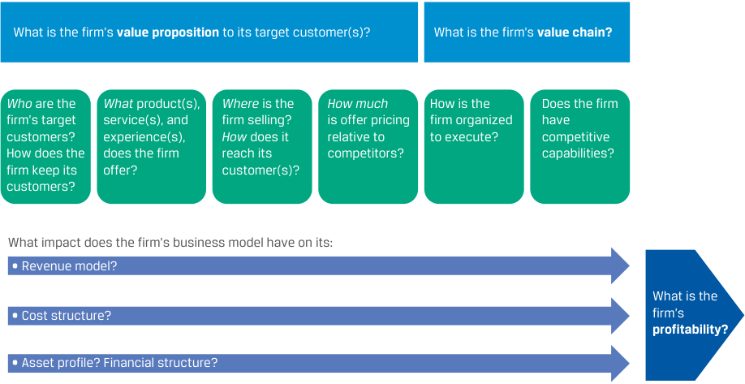
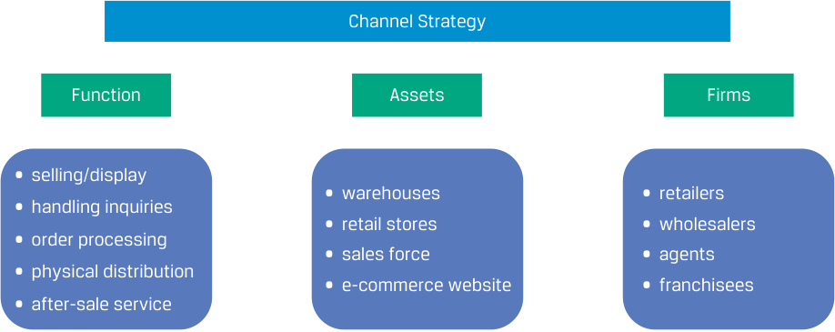
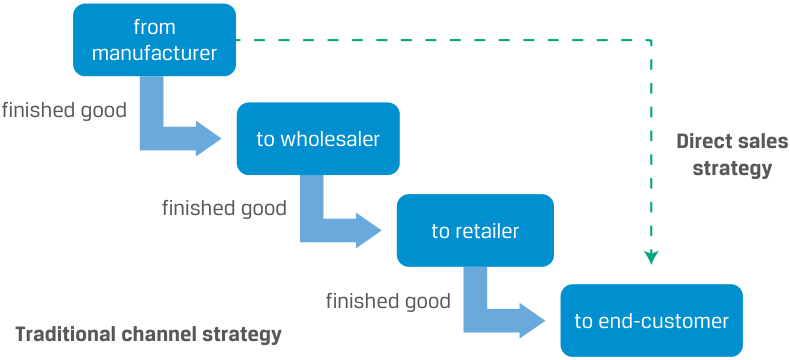
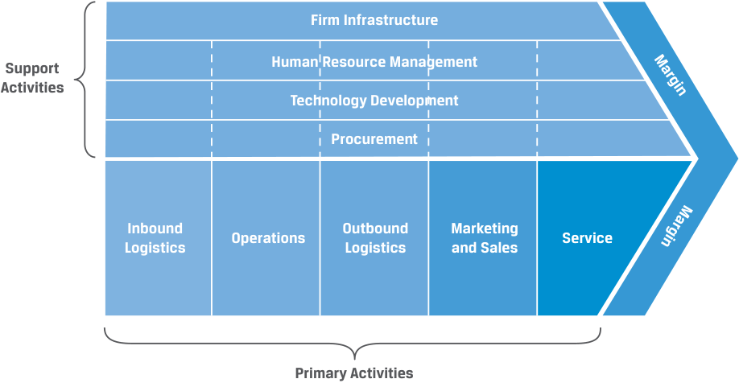

Learning Module 7 Business Models - Part 2: Defining the Business Model
Volume 3: Corporate Issuers
Learning Module 7 Business Models
Part 2/3: Defining the Business Model (PDF Pages 223–237)
Tập 3: Tổ chức Phát hành Doanh nghiệp (Corporate Issuers)
Học phần 7: Các Mô hình Kinh doanh (Business Models)
Phần 2/3: Xác định Mô hình Kinh doanh (Defining the Business Model) (Trang PDF 223–237)
-
B. fractional ownership; subscriptions
-
C. horizontal integration; network effects
-
Solution:
-
B. sở hữu theo phần (fractional ownership); thuê bao định kỳ (subscriptions)
-
C. tích hợp theo chiều ngang (horizontal integration); hiệu ứng mạng lưới (network effects)
-
Lời giải:
A is correct. Companies often bundle complementary products and services by offering a discount for their combined purchase versus the sum of the individual prices, such as a product and a repair/maintenance package. A razor, razorblade model, named for Gillette’s business model of selling a razor with disposable razorblades, combines a durable good sold at near cost with high-margin, possibly proprietary consumables needed to use the durable good. Other examples include Nespresso and Keurig coffee machines, printers and toner/ink, and diagnostic instruments and reagents.
A là đáp án đúng. Các công ty thường bán theo gói (bundle) các sản phẩm và dịch vụ bổ trợ cho nhau bằng cách đưa ra mức chiết khấu khi mua kết hợp so với tổng giá của từng sản phẩm riêng lẻ, chẳng hạn như một sản phẩm kèm theo gói sửa chữa/bảo trì. Mô hình dao cạo và lưỡi dao cạo (razor, razorblade model), được đặt tên theo mô hình kinh doanh bán dao cạo kèm lưỡi dao cạo dùng một lần của Gillette, kết hợp một hàng hóa lâu bền (durable good) được bán gần với giá vốn cùng các vật tư tiêu hao (consumables) có biên lợi nhuận cao, có thể mang tính độc quyền (proprietary), cần thiết để sử dụng hàng hóa lâu bền đó. Các ví dụ khác bao gồm máy pha cà phê Nespresso và Keurig, máy in và hộp mực/mực in, cũng như các thiết bị chẩn đoán và thuốc thử (reagents).
- ______ refers to the increase in the value of a network to its users as more users join.
-
A. “Value chain”
-
B. “Network effects”
-
C. “Value proposition”
-
Solution:
- ______ đề cập đến sự gia tăng giá trị của một mạng lưới đối với người dùng khi có thêm nhiều người dùng tham gia.
-
A. “Chuỗi giá trị” (“Value chain”)
-
B. “Hiệu ứng mạng lưới” (“Network effects”)
-
C. “Tuyên bố giá trị” (“Value proposition”)
-
Lời giải:
B is correct. A network in which participants interact or transact with one another increases in value as more participants join. Examples of companies or services with network effects include financial instrument exchanges, payment networks, social media, and phone and other communication networks. Network effects can be a strong barrier to new industry entrants.
B là đáp án đúng. Một mạng lưới trong đó những người tham gia tương tác hoặc giao dịch với nhau sẽ tăng thêm giá trị khi có thêm nhiều người tham gia. Ví dụ về các công ty hoặc dịch vụ có hiệu ứng mạng lưới bao gồm các sở giao dịch công cụ tài chính, mạng lưới thanh toán, mạng xã hội, cùng mạng điện thoại và các mạng truyền thông khác. Hiệu ứng mạng lưới có thể là một rào cản gia nhập ngành mạnh mẽ đối với các đối thủ mới (new industry entrants).
- ______ involves user communities that enable voluntary collaboration between users of a product with generally a small amount of moderation and oversight by the community host or operator.
-
A. Franchising
-
B. Crowdsourcing
-
C. A loyalty program
-
Solution:
- ______ liên quan đến các cộng đồng người dùng cho phép sự hợp tác tự nguyện giữa những người sử dụng một sản phẩm với mức độ điều phối và giám sát nhìn chung là nhỏ từ đơn vị chủ quản hoặc vận hành cộng đồng.
-
A. Nhượng quyền thương mại (Franchising)
-
B. Huy động nguồn lực từ cộng đồng (Crowdsourcing)
-
C. Chương trình khách hàng thân thiết (A loyalty program)
-
Lời giải:
B is correct. Generically, crowdsourcing means obtaining contributions from multiple parties. Many digital business models incorporate or utilize crowdsourcing as their defining feature, whereby the company creates a service that users build, while the company simply creates rules and moderates user contributions. Common examples include social media, product reviews, open source software, and Wikis.
B là đáp án đúng. Hiểu một cách tổng quát, huy động nguồn lực từ cộng đồng (crowdsourcing) có nghĩa là thu thập sự đóng góp từ nhiều bên. Nhiều mô hình kinh doanh kỹ thuật số kết hợp hoặc tận dụng hình thức huy động nguồn lực từ cộng đồng như một đặc điểm định hình của họ, theo đó công ty tạo ra một dịch vụ để người dùng tự xây dựng nội dung, trong khi công ty chỉ đơn giản là tạo ra các quy tắc và điều phối sự đóng góp của người dùng. Các ví dụ phổ biến bao gồm mạng xã hội, đánh giá sản phẩm (product reviews), phần mềm mã nguồn mở (open source software) và các trang Wiki.
DEFINING THE BUSINESS MODEL
XÁC ĐỊNH MÔ HÌNH KINH DOANH (DEFINING THE BUSINESS MODEL)
Chú thích hình ảnh: Phần 2 (Section 2)
describe key features of business models
Mục tiêu học tập: mô tả các đặc điểm chính của các mô hình kinh doanh (key features of business models)
Successful new businesses may be based on a new product or technology, but there are many success stories based on familiar products or services and a new business model . For example, IKEA successfully combines existing business concepts—low-cost self-assembly furniture, modernist Scandinavian design, and big box retailing—in a
Các doanh nghiệp mới thành công có thể dựa trên một sản phẩm hoặc công nghệ mới, nhưng có rất nhiều câu chuyện thành công dựa trên những sản phẩm hoặc dịch vụ quen thuộc kết hợp với một mô hình kinh doanh (business model) mới. Ví dụ, IKEA đã kết hợp thành công các khái niệm kinh doanh hiện có—đồ nội thất tự lắp ráp chi phí thấp, thiết kế hiện đại vùng Scandinavia và bán lẻ quy mô lớn (big box retailing)—theo một
unique and successful way. Similarly, Google did not invent online search but found a way to improve the accuracy of search results and to generate revenues through advertising based on user search data.
cách thức độc đáo và thành công. Tương tự, Google không phát minh ra công cụ tìm kiếm trực tuyến nhưng đã tìm ra cách cải thiện độ chính xác của kết quả tìm kiếm và tạo ra doanh thu thông qua quảng cáo dựa trên dữ liệu tìm kiếm của người dùng.
Often, successful business models are neither new nor unique but proven. Many businesses, such as wholesalers, retailers, law firms, building contractors, banks, and insurers, have conventional business models. Success for these firms hinges not on business model innovation but on superior execution, skill, proprietary technology, a strong brand, scale, scope economies, or other factors.
While there is no precise generally accepted definition of a business model, it is a description of how a business works and includes the following:
Thông thường, các mô hình kinh doanh thành công không mới cũng không độc đáo mà đã được chứng minh qua thực tế (proven). Nhiều doanh nghiệp, chẳng hạn như các nhà bán buôn, nhà bán lẻ, công ty luật, nhà thầu xây dựng, ngân hàng và công ty bảo hiểm, có các mô hình kinh doanh truyền thống (conventional business models). Sự thành công của các doanh nghiệp này không phụ thuộc vào việc đổi mới mô hình kinh doanh mà dựa vào khả năng thực thi vượt trội (superior execution), kỹ năng, công nghệ độc quyền, thương hiệu mạnh, lợi thế kinh tế theo quy mô (scale), lợi thế kinh tế theo phạm vi (scope economies), hoặc các yếu tố khác.
-
The customer base for the business (“who?”)
-
The product or service the business offers to customers (“what?” and often “why?”)
-
Where is the firm selling and how do its products and services reach customers (“where?”)
-
The pricing strategy (“how much?”)
Mặc dù không có định nghĩa chính xác nào được chấp nhận rộng rãi về mô hình kinh doanh, nhưng đó là một sự mô tả về cách thức một doanh nghiệp vận hành và bao gồm những nội dung sau:
-
- The key assets, partners, and suppliers the business requires (“how?”)
-
Tệp khách hàng của doanh nghiệp (“ai?” – “who?”)
-
Sản phẩm hoặc dịch vụ mà doanh nghiệp cung cấp cho khách hàng (“cái gì?” và thường là “tại sao?” – “what?” and often “why?”)
-
Doanh nghiệp bán hàng ở đâu và các sản phẩm cũng như dịch vụ của doanh nghiệp tiếp cận khách hàng bằng cách nào (“ở đâu?” – “where?”)
-
Chiến lược định giá (“bao nhiêu tiền?” – “how much?”)
-
Các tài sản, đối tác và nhà cung cấp chính yếu mà doanh nghiệp cần có (“như thế nào?” – “how?”)
A business model should provide enough detail so that the basic elements and relationships are clear, without providing so much detail as to become a business plan. A clear business model should have the elements included in Exhibit 1.
Một mô hình kinh doanh cần cung cấp đủ chi tiết để các yếu tố và mối quan hệ cơ bản được thể hiện rõ ràng, mà không cung cấp quá nhiều chi tiết đến mức trở thành một bản kế hoạch kinh doanh (business plan). Một mô hình kinh doanh rõ ràng cần có các yếu tố được bao gồm trong Minh họa 1.
Exhibit 1: Business Model
Minh họa 1: Mô hình Kinh doanh (Exhibit 1: Business Model)

Chú thích hình ảnh: - Tuyên bố giá trị (Value proposition) của doanh nghiệp đối với (các) khách hàng mục tiêu là gì? - Ai (Who) là khách hàng mục tiêu của doanh nghiệp? Doanh nghiệp giữ chân khách hàng bằng cách nào? - Doanh nghiệp cung cấp (các) sản phẩm, dịch vụ và trải nghiệm Gì (What)? - Doanh nghiệp bán hàng Ở đâu (Where)? Doanh nghiệp tiếp cận khách hàng Như thế nào (How)? - Định giá chào bán là Bao nhiêu (How much) so với các đối thủ cạnh tranh? - Chuỗi giá trị (Value chain) của doanh nghiệp là gì? - Doanh nghiệp được tổ chức như thế nào để thực thi? - Doanh nghiệp có các năng lực cạnh tranh (competitive capabilities) hay không? - Mô hình kinh doanh của doanh nghiệp có tác động gì đến: Mô hình doanh thu (Revenue model)? Cấu trúc chi phí (Cost structure)? Hồ sơ tài sản (Asset profile)? Cấu trúc tài chính (Financial structure)? $\rightarrow$ Khả năng sinh lời (Profitability) của doanh nghiệp là gì?
Business Model Features
Các Đặc điểm của Mô hình Kinh doanh (Business Model Features)
Information needed to determine the business model of public corporate issuers is often provided in annual reports and presentations; management may even provide its own description of the issuer’s business model. The beginning of Tesla’s annual report provides a good example.
Thông tin cần thiết để xác định mô hình kinh doanh của các tổ chức phát hành doanh nghiệp đại chúng thường được cung cấp trong các báo cáo thường niên và các bài thuyết trình; ban quản lý thậm chí có thể đưa ra mô tả của riêng mình về mô hình kinh doanh của tổ chức phát hành. Phần mở đầu trong báo cáo thường niên của Tesla cung cấp một ví dụ điển hình.
EXAMPLE 1
VÍ DỤ 1 (EXAMPLE 1)
Tesla Management’s Description of its Business
Mô tả của Ban Quản lý Tesla về Hoạt động Kinh doanh của Công ty (Tesla Management’s Description of its Business)
“We design, develop, manufacture, sell and lease high-performance fully electric vehicles and energy generation and storage systems, and offer services related to our products. We generally sell our products directly to customers, including through our website and retail locations. We also continue to grow our customer-facing infrastructure through a global network of vehicle service centers, Mobile Service technicians, body shops, Supercharger stations and Destination Chargers to accelerate the widespread adoption of our products. We emphasize performance, attractive styling and the safety of our users and workforce in the design and manufacture of our products and are continuing to develop full self-driving technology for improved safety. We also strive to lower the cost of ownership for our customers through continuous efforts to reduce manufacturing costs and by offering financial and other services tailored to our products. Our mission to accelerate the world’s transition to sustainable energy, engineering expertise, vertically integrated business model and focus on user experience differentiate us from other companies.”
“Chúng tôi thiết kế, phát triển, sản xuất, bán và cho thuê các phương tiện chạy hoàn toàn bằng điện hiệu suất cao cùng các hệ thống phát và lưu trữ năng lượng, đồng thời cung cấp các dịch vụ liên quan đến sản phẩm của chúng tôi. Nhìn chung, chúng tôi bán sản phẩm trực tiếp cho khách hàng, bao gồm thông qua trang web và các địa điểm bán lẻ của mình. Chúng tôi cũng tiếp tục phát triển cơ sở hạ tầng tiếp xúc trực tiếp với khách hàng thông qua mạng lưới toàn cầu gồm các trung tâm dịch vụ phương tiện, kỹ thuật viên Dịch vụ Lưu động (Mobile Service technicians), xưởng đồng sơn (body shops), các trạm sạc siêu tốc (Supercharger stations) và các điểm sạc tại điểm đến (Destination Chargers) nhằm đẩy nhanh việc áp dụng rộng rãi các sản phẩm của chúng tôi. Chúng tôi chú trọng đến hiệu suất, kiểu dáng hấp dẫn và sự an toàn của người dùng cũng như lực lượng lao động trong quá trình thiết kế và sản xuất sản phẩm, đồng thời tiếp tục phát triển công nghệ tự lái hoàn toàn (full self-driving technology) để cải thiện độ an toàn. Chúng tôi cũng nỗ lực hạ thấp chi phí sở hữu (cost of ownership) cho khách hàng thông qua những nỗ lực không ngừng nhằm giảm chi phí sản xuất và bằng cách cung cấp các dịch vụ tài chính và dịch vụ khác được thiết kế riêng cho sản phẩm của chúng tôi. Sứ mệnh đẩy nhanh quá trình chuyển đổi của thế giới sang năng lượng bền vững, chuyên môn kỹ thuật, mô hình kinh doanh tích hợp theo chiều dọc (vertically integrated business model) và sự tập trung vào trải nghiệm người dùng tạo nên sự khác biệt của chúng tôi so với các công ty khác.”
We can identify two business model elements from this paragraph.
Chúng ta có thể xác định hai yếu tố của mô hình kinh doanh từ đoạn văn này.
What : “high-performance fully electric vehicles and energy generation and storage systems, and offer services related to our products” and “emphasize performance, attractive styling and . . . safety . . . and are continuing to develop full self-driving technology.”
Cái gì (What): “các phương tiện chạy hoàn toàn bằng điện hiệu suất cao cùng các hệ thống phát và lưu trữ năng lượng, đồng thời cung cấp các dịch vụ liên quan đến sản phẩm của chúng tôi” và “chú trọng đến hiệu suất, kiểu dáng hấp dẫn và . . . sự an toàn . . . đồng thời tiếp tục phát triển công nghệ tự lái hoàn toàn.”
Where: “sell our products directly to customers, including through our website and retail locations. We also continue to grow our customer-facing infrastructure through a global network of vehicle service centers, Mobile Service technicians, body shops, Supercharger stations and Destination Chargers.”
Ở đâu (Where): “bán sản phẩm trực tiếp cho khách hàng, bao gồm thông qua trang web và các địa điểm bán lẻ của mình. Chúng tôi cũng tiếp tục phát triển cơ sở hạ tầng tiếp xúc trực tiếp với khách hàng thông qua mạng lưới toàn cầu gồm các trung tâm dịch vụ phương tiện, kỹ thuật viên Dịch vụ Lưu động, xưởng đồng sơn, các trạm sạc siêu tốc và các điểm sạc tại điểm đến.”
In the quote from Tesla, it describes its products and their attributes; venues in which it sells its products, known as sales channels or simply channels ; and its emphasis on innovation. Analysts use a business model to begin their evaluation of how effectively it has been implemented, the company’s prospects for future success, and understanding its implications for exposures to risks and opportunities. Management can change an issuer’s business model or launch new businesses with distinct models within the same company, so this must be an ongoing analysis.
Trong đoạn trích dẫn từ Tesla, công ty mô tả các sản phẩm và thuộc tính của chúng; các địa điểm nơi công ty bán sản phẩm, được gọi là các kênh bán hàng (sales channels) hay đơn giản là các kênh phân phối (channels); và sự chú trọng của công ty vào đổi mới sáng tạo. Các nhà phân tích sử dụng mô hình kinh doanh để bắt đầu đánh giá mức độ hiệu quả mà mô hình đó đã được triển khai, triển vọng thành công trong tương lai của công ty, cũng như hiểu rõ các hàm ý của nó đối với mức độ tiếp xúc với rủi ro và cơ hội. Ban quản lý có thể thay đổi mô hình kinh doanh của tổ chức phát hành hoặc ra mắt các mảng kinh doanh mới với các mô hình riêng biệt trong cùng một công ty, vì vậy đây phải là một quá trình phân tích liên tục.
Let’s explore the features of a business model further.
Chúng ta hãy khám phá sâu hơn các đặc điểm của một mô hình kinh doanh.
The Customers and the Market (“Who”)
Khách hàng và Thị trường (“Ai” — “Who”)
A business model should identify target customers:
Một mô hình kinh doanh cần xác định được khách hàng mục tiêu:
-
Are there specific types, or segments, of customers served?
-
Are customers other businesses (business-to-business or B2B model) or consumers (business-to-consumer or B2C model)?
-
What geographies will be served?
-
Có những nhóm, hay phân khúc (segments), khách hàng cụ thể nào được phục vụ hay không?
-
Khách hàng là các doanh nghiệp khác (mô hình doanh nghiệp với doanh nghiệp – business-to-business hay B2B model) hay là người tiêu dùng cá nhân (mô hình doanh nghiệp với người tiêu dùng – business-to-consumer hay B2C model)?
-
Những khu vực địa lý nào sẽ được phục vụ?
Tesla management’s description is silent on which customer segments it is targeting, most likely because its target is shifting gradually toward the mass market with lower-cost and lower-price models. For an analyst, this type of inference can guide inputs for financial models, such as unit and price forecasts.
Mô tả của ban quản lý Tesla không đề cập đến việc công ty đang nhắm tới những phân khúc khách hàng nào, rất có thể là vì mục tiêu của công ty đang dịch chuyển dần sang thị trường đại chúng (mass market) với các mẫu xe có chi phí thấp hơn và giá bán thấp hơn. Đối với một nhà phân tích, kiểu suy luận này có thể định hướng các dữ liệu đầu vào cho các mô hình tài chính, chẳng hạn như dự báo sản lượng và giá bán.
It is common in consumer markets to think of demographic segments, such as high-income suburban families. In many cases, segmentation is even narrower and is unique to the product or service category—for instance, “affluent early adopters of technology with homes that support plug-in charging in countries with EV subsidies.”
Trên các thị trường tiêu dùng, việc nghĩ đến các phân khúc nhân khẩu học (demographic segments), chẳng hạn như các gia đình sống ở vùng ngoại ô có thu nhập cao, là điều phổ biến. Trong nhiều trường hợp, việc phân khúc còn hẹp hơn nữa và mang tính đặc thù đối với danh mục sản phẩm hoặc dịch vụ—chẳng hạn như “những người giàu có tiên phong đón nhận công nghệ (affluent early adopters of technology) có nhà ở hỗ trợ sạc điện tại các quốc gia có trợ cấp xe điện (EV).”
Business opportunities often arise because established firms may not effectively serve—or even recognize—certain prospective customer segments. At the same time, choices made concerning a firm’s target customers may introduce other related considerations or risks to the firm, such as high barriers to entry, changes in customer segment(s), or greater competition.
Các cơ hội kinh doanh thường xuất hiện bởi vì các doanh nghiệp lâu đời có thể không phục vụ hiệu quả—hoặc thậm chí không nhận ra—một số phân khúc khách hàng tiềm năng nhất định. Đồng thời, những lựa chọn được đưa ra liên quan đến khách hàng mục tiêu của doanh nghiệp có thể mang lại những yếu tố cần cân nhắc hoặc rủi ro liên quan khác cho doanh nghiệp, chẳng hạn như rào cản gia nhập ngành cao (high barriers to entry), những thay đổi trong (các) phân khúc khách hàng, hoặc sự cạnh tranh gay gắt hơn.
EXAMPLE 2
VÍ DỤ 2 (EXAMPLE 2)
Segmenting Customers
Phân khúc Khách hàng (Segmenting Customers)
Customers can be classified or segmented in numerous ways, including by their geography, demographics, seasonal or life-cycle timing, and behavior. Sophisticated market analytics can be used in segmenting to further break out smaller, homogeneous markets. Such analyses help such companies as Tesla to develop products and market them effectively.
Khách hàng có thể được phân loại hoặc phân khúc theo nhiều cách, bao gồm theo địa lý, nhân khẩu học, thời điểm theo mùa vụ hoặc giai đoạn trong vòng đời, và hành vi. Các phương pháp phân tích thị trường tinh vi (sophisticated market analytics) có thể được sử dụng trong việc phân khúc khách hàng (segmenting) để chia nhỏ hơn nữa thành các thị trường đồng nhất (homogeneous markets) có quy mô nhỏ hơn. Những phân tích như vậy giúp các công ty như Tesla phát triển sản phẩm và tiếp thị chúng một cách hiệu quả.
Tesla positioned its products as the “new technology for clean energy” and moved away from being a company that solely produced expensive, premium electric sports cars to a company that defined what a practical, attractive, electric vehicle could look like. By targeting aspirational middle- and upper-class consumers who not only thrive on status-seeking behavior but also seek to be perceived to be environmentally friendly, socially and environmentally progressive, and cost conscious, Tesla expanded its customer markets.
Tesla đã định vị sản phẩm của mình là “công nghệ mới cho năng lượng sạch” và chuyển mình từ một công ty chỉ sản xuất những chiếc xe thể thao chạy điện đắt tiền, cao cấp sang một công ty định nghĩa hình mẫu của một chiếc xe điện thực dụng, hấp dẫn. Bằng cách nhắm mục tiêu đến những người tiêu dùng thuộc tầng lớp trung lưu và thượng lưu giàu khát vọng—những người không chỉ hướng tới hành vi tìm kiếm địa vị xã hội (status-seeking behavior) mà còn muốn được nhìn nhận là thân thiện với môi trường, cấp tiến về mặt xã hội và môi trường, đồng thời có ý thức về chi phí—Tesla đã mở rộng thị trường khách hàng của mình.
Tesla and other companies can drill down to the postal code level for their customers and segment customers based on their social group, life-cycle stage, and wealth. This allows companies to identify customer cohorts across geographies and combine them into larger homogeneous markets that are easier to access and penetrate using targeted digital advertising.
Tesla và các công ty khác có thể đi sâu phân tích đến tận cấp độ mã bưu chính (postal code level) của khách hàng và phân khúc khách hàng dựa trên nhóm xã hội, giai đoạn cuộc đời và mức độ giàu có của họ. Điều này cho phép các công ty xác định các nhóm khách hàng có chung đặc điểm (customer cohorts) qua các vùng địa lý và kết hợp họ thành những thị trường đồng nhất lớn hơn, dễ tiếp cận và thâm nhập hơn bằng cách sử dụng quảng cáo kỹ thuật số có mục tiêu (targeted digital advertising).
Product or Service Offering (“What” and Often “Why”)
Sản phẩm hoặc Dịch vụ Cung ứng (“Cái gì” và Thường là “Tại sao” — “What” and Often “Why”)
The business model should define what product or service the firm offers and how, if at all, it is different from competitor offerings by referencing the needs of its target customers. This helps the analyst identify the addressable market for the business and to understand key opportunities and risks. For example, there may be a high risk of imitation or substitution. Understanding why customers buy the product or service, or the “job” that customers are “hiring” the product or service to fulfill, can help analysts identify current and potential competitors. While trucks and railroads do not seem like competitors, they both fulfill the same customer need: the transportation of goods. A more thoughtful analysis would identify which types of customers and in which scenarios customers would choose truck versus rail transportation (as well as air and marine transportation).
Mô hình kinh doanh cần xác định sản phẩm hoặc dịch vụ nào mà doanh nghiệp cung cấp và sản phẩm/dịch vụ đó khác biệt như thế nào (nếu có) so với sản phẩm/dịch vụ của đối thủ cạnh tranh bằng cách tham chiếu đến nhu cầu của khách hàng mục tiêu. Điều này giúp nhà phân tích xác định thị trường có thể tiếp cận (addressable market) của doanh nghiệp và hiểu rõ các cơ hội cũng như rủi ro chính yếu. Ví dụ, có thể có rủi ro cao về việc bị bắt chước (imitation) hoặc bị thay thế (substitution). Việc hiểu lý do tại sao khách hàng mua sản phẩm hoặc dịch vụ, hay “công việc” (“job”) mà khách hàng đang “thuê” (“hiring”) sản phẩm hoặc dịch vụ đó thực hiện, có thể giúp các nhà phân tích xác định các đối thủ cạnh tranh hiện tại và tiềm năng. Mặc dù xe tải và đường sắt có vẻ không giống những đối thủ cạnh tranh, nhưng cả hai đều đáp ứng cùng một nhu cầu của khách hàng: vận chuyển hàng hóa. Một phân tích sâu sắc hơn sẽ xác định những loại khách hàng nào và trong những kịch bản nào khách hàng sẽ chọn vận tải bằng xe tải thay vì đường sắt (cũng như vận tải hàng không và đường biển).
Generally, business customers have straightforward needs (e.g., ship goods), are sophisticated buyers, and are motivated to earn a profit. Consumer customers have diverse needs that can be impossible to quantify. Some consumers purchase whichever car is the most economical on a cost per mile basis, while others look to purchase aesthetically pleasing, high-performance, or low-emission vehicles. Certain products can satisfy these needs, and companies can use advertising, promotions, and product placement in media to create these needs in the first place.
Nhìn chung, khách hàng doanh nghiệp (business customers) có những nhu cầu trực diện, rõ ràng (ví dụ: vận chuyển hàng hóa), là những người mua chuyên nghiệp, tinh tường (sophisticated buyers), và có động lực kiếm lợi nhuận. Khách hàng cá nhân (consumer customers) có những nhu cầu đa dạng mà có thể không thể định lượng được. Một số người tiêu dùng mua bất kỳ chiếc xe nào tiết kiệm nhất xét trên cơ sở chi phí trên mỗi dặm, trong khi những người khác lại tìm mua những chiếc xe có tính thẩm mỹ cao, hiệu suất cao hoặc lượng khí thải thấp. Một số sản phẩm nhất định có thể thỏa mãn những nhu cầu này, và các công ty có thể sử dụng quảng cáo, khuyến mãi và việc lồng ghép sản phẩm trên các phương tiện truyền thông (product placement in media) để tạo ra những nhu cầu này ngay từ đầu.
For Tesla, management describes its products quite precisely: “high-performance fully electric vehicles and energy generation and storage systems.” Some companies, however, will use overly broad terms in describing their offerings and addressable markets, overstate differentiation, or reference platforms and networks that may be very weakly developed—all in an attempt to convince investors that everyone could be a customer and inflate the value of the business. It is important for analysts to scrutinize management’s assertions and supplement them with independent research.
Đối với Tesla, ban quản lý mô tả các sản phẩm của mình khá chính xác: “các phương tiện chạy hoàn toàn bằng điện hiệu suất cao cùng các hệ thống phát và lưu trữ năng lượng.” Tuy nhiên, một số công ty sẽ sử dụng những thuật ngữ quá rộng khi mô tả sản phẩm/dịch vụ và thị trường có thể tiếp cận của họ, phóng đại sự khác biệt hóa, hoặc nhắc đến các nền tảng và mạng lưới mà trên thực tế có thể phát triển rất yếu ớt—tất cả chỉ nhằm thuyết phục các nhà đầu tư rằng bất kỳ ai cũng có thể trở thành khách hàng và thổi phồng giá trị của doanh nghiệp. Điều quan trọng là các nhà phân tích phải xem xét kỹ lưỡng các khẳng định của ban quản lý và bổ sung chúng bằng các nghiên cứu độc lập.
EXAMPLE 3
VÍ DỤ 3 (EXAMPLE 3)
Business Model Evolution: Netflix
Sự Tiến hóa của Mô hình Kinh doanh: Netflix (Business Model Evolution: Netflix)
Netflix’s evolution since its start in 1997 is a prime example of how the “what” evolves over time. It started as a DVD rental by mail business in 1998, when the home movie rental business was dominated by brick-and-mortar rental stores and only 2% of the US households owned a DVD player. Netflix created and operated a website for customers to select DVDs to rent and delivered them through the mail. Subsequently, the company introduced a subscription model, where customers could rent several DVDs at one time for a fixed monthly fee. This new service disrupted the entire video rental industry.
Sự tiến hóa của Netflix kể từ khi thành lập vào năm 1997 là một ví dụ điển hình về cách thức yếu tố “cái gì” (the “what”) tiến hóa theo thời gian. Công ty khởi đầu là một doanh nghiệp cho thuê đĩa DVD qua đường bưu điện vào năm 1998, khi ngành kinh doanh cho thuê phim tại nhà đang bị thống trị bởi các cửa hàng cho thuê truyền thống (brick-and-mortar rental stores) và chỉ có 2% số hộ gia đình tại Hoa Kỳ sở hữu đầu phát DVD. Netflix đã tạo ra và vận hành một trang web để khách hàng lựa chọn các đĩa DVD muốn thuê và giao chúng qua đường bưu điện. Sau đó, công ty đã giới thiệu mô hình thuê bao định kỳ (subscription model), nơi khách hàng có thể thuê nhiều đĩa DVD cùng một lúc với một khoản phí cố định hàng tháng. Dịch vụ mới này đã làm đảo lộn (disrupted) toàn bộ ngành công nghiệp cho thuê băng đĩa hình.
Netflix’s direct rival at the time was Blockbuster, but it took Blockbuster years to offer the same service as Netflix. By that time, Netflix had launched a new business model: a subscription-based, online-streaming video platform, and began to de-emphasize its DVD rental business. Through substantial investment in video content and improving streaming technology, Netflix grew to millions of monthly subscribers. The monthly subscription fee is substantially lower than monthly cable service fees, though Netflix has increased prices significantly over time. Netflix has differentiated its platform by producing exclusive content. Blockbuster filed for bankruptcy in 2010 and ceased operations in 2014.
Đối thủ trực tiếp của Netflix vào thời điểm đó là Blockbuster, nhưng Blockbuster đã mất nhiều năm mới cung cấp được dịch vụ tương tự như Netflix. Đến thời điểm đó, Netflix đã ra mắt một mô hình kinh doanh mới: nền tảng phát video trực tuyến (online-streaming video platform) dựa trên thuê bao, và bắt đầu giảm dần sự chú trọng vào mảng kinh doanh cho thuê đĩa DVD. Thông qua việc đầu tư đáng kể vào nội dung video và cải thiện công nghệ truyền phát trực tuyến, Netflix đã phát triển lên tới hàng triệu thuê bao hàng tháng. Phí thuê bao hàng tháng thấp hơn đáng kể so với phí dịch vụ truyền hình cáp hàng tháng, mặc dù Netflix đã tăng giá đáng kể theo thời gian. Netflix đã tạo sự khác biệt cho nền tảng của mình bằng cách sản xuất nội dung độc quyền (exclusive content). Blockbuster đã nộp đơn xin phá sản vào năm 2010 và ngừng hoạt động vào năm 2014.
Channels (“Where”)
Các Kênh Phân phối (“Ở đâu” — “Where”)
A firm’s channel strategy refers to “where” the firm is selling its offering; that is, how does it reach its customers? Channel strategy usually includes two main functions: selling the firm’s products and services (“sales and marketing”) and delivering them to customers (“distribution” or “logistics”).
Chiến lược kênh phân phối (channel strategy) của một doanh nghiệp đề cập đến việc doanh nghiệp đang bán sản phẩm/dịch vụ của mình “ở đâu”; nghĩa là, doanh nghiệp tiếp cận khách hàng bằng cách nào? Chiến lược kênh phân phối thường bao gồm hai chức năng chính: bán các sản phẩm và dịch vụ của doanh nghiệp (“bán hàng và tiếp thị” – “sales and marketing”) và giao chúng đến tay khách hàng (“phân phối” hoặc “hậu cần/logistics” – “distribution” or “logistics”).
In assessing a firm’s channel strategy, it is important to distinguish between what functions the firm can perform internally and what functions are better done by strategic partners and suppliers. For example, many business software companies do not install their software on customers’ systems. Instead, customers hire a third-party consulting firm, which often provides additional ongoing services. Exhibit 2 provides examples of the functions, assets, and firms that may be part of the channel strategy for a firm.
Khi đánh giá chiến lược kênh phân phối của một doanh nghiệp, điều quan trọng là phải phân biệt giữa những chức năng nào doanh nghiệp có thể tự thực hiện trong nội bộ và những chức năng nào được thực hiện tốt hơn bởi các đối tác chiến lược và nhà cung cấp. Ví dụ, nhiều công ty phần mềm doanh nghiệp không trực tiếp cài đặt phần mềm của họ lên hệ thống của khách hàng. Thay vào đó, khách hàng thuê một công ty tư vấn bên thứ ba, đơn vị thường cung cấp thêm các dịch vụ hỗ trợ thường xuyên. Minh họa 2 cung cấp các ví dụ về các chức năng, tài sản và các doanh nghiệp có thể là một phần trong chiến lược kênh phân phối của một công ty.
Exhibit 2: Channel Strategy: Functions vs. Assets vs. Firms
Minh họa 2: Chiến lược Kênh Phân phối: Chức năng so với Tài sản so với Doanh nghiệp (Exhibit 2: Channel Strategy: Functions vs. Assets vs. Firms)

Chú thích hình ảnh: - Chiến lược Kênh Phân phối (Channel Strategy): - Chức năng (Function): bán hàng/trưng bày (selling/display), xử lý thắc mắc (handling inquiries), xử lý đơn hàng (order processing), phân phối vật lý (physical distribution), dịch vụ hậu mãi (after-sale service). - Tài sản (Assets): kho bãi (warehouses), cửa hàng bán lẻ (retail stores), đội ngũ bán hàng (sales force), trang web thương mại điện tử (e-commerce website). - Doanh nghiệp (Firms): nhà bán lẻ (retailers), nhà bán buôn (wholesalers), đại lý (agents), bên nhận quyền thương mại (franchisees).
For companies that sell physical products, the traditional channel strategy is typically reflected in the flow of inventory through a series of intermediaries before reaching the final customer. Firms at each stage have their own physical facilities, and the product is purchased and then re-sold by the intermediaries at each stage until it is sold to the final customer.
Đối với các công ty bán sản phẩm vật lý, chiến lược kênh phân phối truyền thống thường được phản ánh qua dòng chảy hàng tồn kho qua một chuỗi các bên trung gian (intermediaries) trước khi đến tay khách hàng cuối cùng. Các doanh nghiệp ở mỗi giai đoạn có cơ sở vật chất riêng của mình, và sản phẩm được mua rồi bán lại bởi các bên trung gian ở mỗi giai đoạn cho đến khi được bán cho khách hàng cuối cùng.
Some companies, however, employ a direct sales strategy, selling directly to the end customer. Direct sales is a common and longstanding channel strategy for complex or high-margin products or services, such as medical devices, industrial equipment, and luxury goods. It is common in B2B models where the universe of potential customers is relatively small and easily reached. Historically, direct sales involved a significant investment in salespeople, but this is increasingly either substituted or supplemented with digital sales capabilities. Exhibit 3 contrasts the interactions of a traditional channel strategy with a direct sales strategy.
Tuy nhiên, một số công ty sử dụng chiến lược bán hàng trực tiếp (direct sales), bán thẳng cho khách hàng cuối cùng. Bán hàng trực tiếp là một chiến lược kênh phân phối phổ biến và lâu đời đối với các sản phẩm hoặc dịch vụ phức tạp hoặc có biên lợi nhuận cao, chẳng hạn như thiết bị y tế, thiết bị công nghiệp và hàng xa xỉ (luxury goods). Chiến lược này phổ biến trong các mô hình B2B nơi tập hợp các khách hàng tiềm năng tương đối nhỏ và dễ tiếp cận. Trong lịch sử, bán hàng trực tiếp đòi hỏi một khoản đầu tư đáng kể vào đội ngũ nhân viên bán hàng, nhưng điều này ngày càng được thay thế hoặc bổ sung bằng các năng lực bán hàng kỹ thuật số (digital sales capabilities). Minh họa 3 đối chiếu sự tương tác của chiến lược kênh phân phối truyền thống với chiến lược bán hàng trực tiếp.
Exhibit 3: Traditional Channel Strategy (Product) vs. Direct Sales Strategy
Minh họa 3: Chiến lược Kênh Phân phối Truyền thống (Sản phẩm) so với Chiến lược Bán hàng Trực tiếp (Exhibit 3: Traditional Channel Strategy (Product) vs. Direct Sales Strategy)

Chú thích hình ảnh: - Chiến lược kênh truyền thống (Traditional channel strategy): Từ nhà sản xuất (from manufacturer) $\rightarrow$ thành phẩm đến nhà bán buôn (finished good to wholesaler) $\rightarrow$ thành phẩm đến nhà bán lẻ (finished good to retailer) $\rightarrow$ thành phẩm đến khách hàng cuối cùng (finished good to end-customer). - Chiến lược bán hàng trực tiếp (Direct sales strategy): Từ nhà sản xuất chuyển thẳng đến khách hàng cuối cùng (end-customer).
Often, channels are used in combination. A so-called omnichannel strategy, common for apparel and consumer packaged goods, relies on both digital and physical channels to complete a sale. For example, a customer might order an item online and pick it up in a store or select an item in a store and have it delivered.
Thông thường, các kênh phân phối được sử dụng kết hợp với nhau. Chiến lược được gọi là đa kênh hợp nhất (omnichannel), phổ biến đối với ngành may mặc và hàng tiêu dùng đóng gói (consumer packaged goods), dựa vào cả kênh kỹ thuật số và kênh vật lý để hoàn tất một giao dịch bán hàng. Ví dụ, một khách hàng có thể đặt mua một món hàng trực tuyến và nhận hàng tại cửa hàng hoặc chọn một món hàng tại cửa hàng và yêu cầu giao hàng tận nơi.
EXAMPLE 4
VÍ DỤ 4 (EXAMPLE 4)
Adidas
Adidas
Adidas is the world’s second largest sportswear brand and combines four channels to distribute its products: retail shops, franchise outlets, wholesale business, and its own e-commerce. The following excerpt from its annual report summarizes its channel strategy:
Adidas là thương hiệu đồ thể thao lớn thứ hai thế giới và kết hợp bốn kênh để phân phối sản phẩm của mình: cửa hàng bán lẻ tự sở hữu (retail shops), cửa hàng nhượng quyền (franchise outlets), mảng kinh doanh bán buôn (wholesale business), và kênh thương mại điện tử của riêng hãng (own e-commerce). Đoạn trích sau đây từ báo cáo thường niên của hãng tóm tắt chiến lược kênh phân phối này:
“With more than 2,500 own-retail stores, more than 15,000 mono-branded franchise stores and more than 150,000 wholesale doors, we have an unrivaled network of consumer touchpoints within our industry. In addition, through our own e-commerce channel, our single biggest store available to consumers in over 40 countries, we are leveraging a consistent global framework.”
“Với hơn 2,500 cửa hàng bán lẻ tự sở hữu, hơn 15,000 cửa hàng nhượng quyền đơn thương hiệu (mono-branded franchise stores) và hơn 150,000 điểm bán buôn (wholesale doors), chúng tôi sở hữu một mạng lưới điểm chạm người tiêu dùng (consumer touchpoints) vô song trong ngành. Ngoài ra, thông qua kênh thương mại điện tử của riêng mình—cửa hàng đơn lẻ lớn nhất của chúng tôi phục vụ người tiêu dùng tại hơn 40 quốc gia—chúng tôi đang tận dụng một khuôn khổ toàn cầu nhất quán.”
Source: Adidas AG Annual Report 2019 https:// report .adidas -group .com/ 2019/ en/ group -management -report -our -company/ corporate -strategy/ sales -and -distribution -strategy .html
Nguồn: Báo cáo Thường niên 2019 của Adidas AG (https://report.adidas-group.com/2019/en/group-management-report-our-company/corporate-strategy/sales-and-distribution-strategy.html)
The channels used by a business are material drivers of revenues and cost behavior, profitability, and sensitivity to internal and external risk factors. Companies that employ a direct sales strategy have the advantage of a close relationship to customers and do not risk their products being shown alongside competitors on a shelf. However, direct sales impose significant cost, an important portion of which is fixed salaries and benefits.
Các kênh phân phối được một doanh nghiệp sử dụng là những yếu tố trọng yếu quyết định doanh thu và hành vi chi phí (cost behavior), khả năng sinh lời, cũng như mức độ nhạy cảm trước các yếu tố rủi ro nội tại và bên ngoài. Các công ty áp dụng chiến lược bán hàng trực tiếp có lợi thế về mối quan hệ gắn bó chặt chẽ với khách hàng và không gặp rủi ro sản phẩm của mình bị trưng bày cạnh sản phẩm của các đối thủ cạnh tranh trên cùng một kệ hàng. Tuy nhiên, bán hàng trực tiếp làm phát sinh chi phí đáng kể, mà một phần quan trọng trong đó là tiền lương và phúc lợi cố định.
How a firm’s channel strategy differs from those of its competitors is an important factor to consider. For example, Tesla references its direct sales strategy, which is different from its US competitors, which sell to franchised dealers. This difference will affect comparability of financial results between Tesla and US automakers.
Cách thức chiến lược kênh phân phối của một doanh nghiệp khác biệt so với chiến lược của các đối thủ cạnh tranh là một yếu tố quan trọng cần xem xét. Ví dụ, Tesla nhắc đến chiến lược bán hàng trực tiếp của mình, vốn khác biệt so với các đối thủ cạnh tranh tại Hoa Kỳ (những hãng bán xe cho các đại lý nhận quyền – franchised dealers). Sự khác biệt này sẽ ảnh hưởng đến khả năng so sánh kết quả tài chính giữa Tesla và các nhà sản xuất ô tô Hoa Kỳ.
Pricing (“How Much”)
Định giá (“Bao nhiêu tiền” — “How Much”)
A business model needs to provide sufficient detail about pricing so that the logic of the business is clear.
Một mô hình kinh doanh cần cung cấp đủ chi tiết về việc định giá để tính logic của hoạt động kinh doanh được rõ ràng.
-
Does the firm price at a premium, at parity, or at a discount relative to competitors?
-
How do prices and costs compare?
-
How is the firm’s pricing justified in its business model?
-
Doanh nghiệp định giá cao hơn (at a premium), ngang bằng (at parity), hay chiết khấu thấp hơn (at a discount) so với các đối thủ cạnh tranh?
-
Giá bán và chi phí tương quan với nhau như thế nào?
-
Mức định giá của doanh nghiệp được lý giải hợp lý như thế nào trong mô hình kinh doanh của họ?
Companies selling in markets with many competitors and little or no product differentiation are price takers that simply receive the market price determined by supply and demand; they are known as commodity producers . Examples of commodities include oil and gas, pharmaceuticals that are no longer patented, and many types of loans. Companies selling in markets with few competitors or with highly differentiated products enjoy more pricing power , or the ability to maintain prices above costs or increase prices without negatively impacting customer demand. A business that does not have pricing power is likely to pursue a cost leadership strategy, seeking to be the lowest-cost producer, such as discount retailers Costco and Lidl and the low-cost airline Ryanair.
Các công ty bán hàng trên những thị trường có nhiều đối thủ cạnh tranh và có ít hoặc không có sự khác biệt hóa sản phẩm là những người chấp nhận giá (price takers), chỉ đơn giản nhận mức giá thị trường được quyết định bởi cung và cầu; họ được gọi là các nhà sản xuất hàng hóa cơ bản (commodity producers). Ví dụ về hàng hóa cơ bản/đồng nhất (commodities) bao gồm dầu khí, dược phẩm đã hết hạn bằng sáng chế, và nhiều loại khoản vay. Các công ty bán hàng trên những thị trường có ít đối thủ cạnh tranh hoặc có các sản phẩm khác biệt hóa cao (highly differentiated products) tận hưởng nhiều quyền lực định giá (pricing power) hơn, tức là khả năng duy trì mức giá cao hơn chi phí hoặc tăng giá mà không tác động tiêu cực đến nhu cầu của khách hàng. Một doanh nghiệp không có quyền lực định giá nhiều khả năng sẽ theo đuổi chiến lược dẫn đầu về chi phí (cost leadership strategy), tìm cách trở thành nhà sản xuất có chi phí thấp nhất, chẳng hạn như các nhà bán lẻ chiết khấu Costco và Lidl cùng hãng hàng không giá rẻ Ryanair.
Companies charging premium prices may justify doing so by emphasizing cost savings for customers elsewhere or by adding services for a reduced price (or free). For example, while Tesla’s vehicles are priced at a premium, the annual report references a lower total cost of ownership, which refers to the aggregate direct and indirect costs associated with owning an asset over its life span. After considering government subsidies and the lower costs of electric charging compared with petroleum, the price is more competitive (though there is a risk of subsidies decreasing or ceasing in the
Các công ty tính mức giá cao (premium prices) có thể biện minh cho việc làm đó bằng cách nhấn mạnh vào khoản tiết kiệm chi phí cho khách hàng ở những khía cạnh khác hoặc bằng cách bổ sung thêm các dịch vụ với mức giá giảm (hoặc miễn phí). Ví dụ, mặc dù các phương tiện của Tesla được định giá ở phân khúc cao cấp, nhưng báo cáo thường niên của hãng lại tham chiếu đến tổng chi phí sở hữu (total cost of ownership) thấp hơn—đề cập đến tổng hợp các chi phí trực tiếp và gián tiếp gắn liền với việc sở hữu một tài sản trong suốt vòng đời của nó. Sau khi tính đến các khoản trợ cấp của chính phủ và chi phí sạc điện thấp hơn so với xăng dầu, mức giá trở nên cạnh tranh hơn (mặc dù có rủi ro là các khoản trợ cấp sẽ giảm bớt hoặc chấm dứt trong
future). This value proposition— the reduced total cost of ownership through some combination of product capabilities, reliability, ease of maintenance and operation, training, and so on—is common to business models in many sectors.
tương lai). Tuyên bố giá trị (value proposition) này—việc giảm tổng chi phí sở hữu thông qua một sự kết hợp nào đó giữa năng lực sản phẩm, độ tin cậy, sự dễ dàng trong bảo trì và vận hành, đào tạo, v.v.—rất phổ biến đối với các mô hình kinh doanh trong nhiều lĩnh vực.
In some cases, however, companies do not “justify” premium pricing but, rather, establish strong brands and distinctiveness that customers value. While some of Tesla’s prices can be justified based on lower total costs of ownership, much of it is owed to the aesthetic, performance, and intangible characteristics valued by customers and created by the company and its advertising. The same is true for most premium and luxury goods and services.
Tuy nhiên, trong một số trường hợp, các công ty không cần “biện minh” cho việc định giá cao mà thay vào đó xây dựng những thương hiệu mạnh và nét độc đáo riêng biệt (distinctiveness) mà khách hàng trân trọng. Mặc dù một phần mức giá của Tesla có thể được lý giải dựa trên tổng chi phí sở hữu thấp hơn, nhưng phần lớn trong đó là nhờ vào tính thẩm mỹ, hiệu suất và các đặc điểm vô hình được khách hàng đánh giá cao do công ty và hoạt động quảng cáo của công ty tạo ra. Điều tương tự cũng đúng đối với hầu hết các hàng hóa và dịch vụ cao cấp và xa xỉ.
Pricing and Revenue Models
Các Mô hình Định giá và Doanh thu (Pricing and Revenue Models)
A pricing model describes how much money customers are billed for units of products or services. There are many models because there are many ways to specify a unit of product or service, and varying prices can be established, known as price discrimination , based on such factors as quality or grade, units sold, channel, customer size and type, and unit cost. The objective of price discrimination is to maximize profit in a situation where different customers have different willingness to pay. It may also be less costly to serve certain customer segments, such as large-volume buyers.
Mô hình định giá (pricing model) mô tả số tiền khách hàng được lập hóa đơn thanh toán cho các đơn vị sản phẩm hoặc dịch vụ. Có rất nhiều mô hình bởi vì có nhiều cách để xác định một đơn vị sản phẩm hoặc dịch vụ, và các mức giá khác nhau có thể được thiết lập, được gọi là phân biệt giá (price discrimination), dựa trên các yếu tố như chất lượng hoặc cấp độ (grade), số lượng đơn vị bán ra, kênh phân phối, quy mô và loại hình khách hàng, cũng như chi phí đơn vị. Mục tiêu của phân biệt giá là tối đa hóa lợi nhuận trong một tình huống mà những khách hàng khác nhau có mức độ sẵn lòng chi trả (willingness to pay) khác nhau. Việc phục vụ một số phân khúc khách hàng nhất định, chẳng hạn như những người mua số lượng lớn, cũng có thể ít tốn kém chi phí hơn.
Rather than changing list or published prices, companies often implement pricing strategies using variable discounting, promotions, and bundles. For example, a customer may be offered a discount that other customers are not offered, and companies may adjust prices by changing the generosity of promotions rather than changing list prices. Prices adjusted for these are typically referred to as net prices.
Thay vì thay đổi giá niêm yết (list or published prices), các công ty thường triển khai các chiến lược định giá bằng cách sử dụng chiết khấu linh hoạt (variable discounting), khuyến mãi (promotions) và bán theo gói (bundles). Ví dụ, một khách hàng có thể được hưởng mức chiết khấu mà những khách hàng khác không được nhận, và các công ty có thể điều chỉnh giá bằng cách thay đổi mức độ hào phóng của các chương trình khuyến mãi thay vì thay đổi giá niêm yết. Mức giá đã được điều chỉnh cho những khoản này thường được gọi là giá ròng (net prices).
Common pricing models include the following:
Các mô hình định giá phổ biến bao gồm:
-
Tiered pricing : Charging different prices to different buyers, often based on volume purchased but also based on product features (e.g., base versus premium trims of vehicles)
-
Dynamic pricing : Charging different prices at different times and for different types of customers depending on such variables as available supply levels and demand. Specific examples include seasonal pricing for hotels, where prices may be high in the summer for beachfront properties and low in the winter, and surge pricing by ride-sharing companies Uber and Lyft, in which prices are raised in periods of exceptionally high demand.
-
Value-based pricing : Setting prices based on the value received by the customer, which often involves estimating opportunity cost. This approach is commonly attempted in pharmaceuticals, where, for example, the price of a new drug that reduces the risk of stroke by 33% would reflect the savings from avoided hospitalization and death. Such an approach leads to different prices for different drugs since drugs vary in effectiveness and the type of disease they treat, and the prices of hospitalizations, physician services, and so on, that may be avoided from their use also vary by country.
-
Auction/reverse auction models : These models establish prices through a bidding process. Digital technology enables this process to be automated, making these models feasible in new categories (e.g., Google and Baidu for digital advertising and eBay for consumer merchandise).
-
Định giá theo bậc (Tiered pricing): Tính các mức giá khác nhau cho những người mua khác nhau, thường dựa trên khối lượng mua nhưng cũng dựa trên các tính năng của sản phẩm (ví dụ: phiên bản tiêu chuẩn so với phiên bản cao cấp của các phương tiện giao thông).
-
Định giá động (Dynamic pricing): Tính các mức giá khác nhau vào những thời điểm khác nhau và cho các loại khách hàng khác nhau tùy thuộc vào các biến số như mức cung sẵn có và nhu cầu. Các ví dụ cụ thể bao gồm định giá theo mùa (seasonal pricing) đối với các khách sạn, nơi giá có thể cao vào mùa hè đối với các bất động sản ven biển và thấp vào mùa đông, và định giá giờ cao điểm (surge pricing) của các công ty chia sẻ chuyến đi như Uber và Lyft, trong đó giá được tăng lên trong những khoảng thời gian có nhu cầu cao đột biến.
-
Định giá dựa trên giá trị (Value-based pricing): Ấn định giá dựa trên giá trị mà khách hàng nhận được, thường liên quan đến việc ước tính chi phí cơ hội. Cách tiếp cận này thường được áp dụng trong ngành dược phẩm, nơi ví dụ như giá của một loại thuốc mới giúp giảm 33% nguy cơ đột quỵ sẽ phản ánh khoản tiết kiệm từ việc tránh phải nhập viện và tử vong. Cách tiếp cận như vậy dẫn đến các mức giá khác nhau cho các loại thuốc khác nhau vì thuốc có hiệu quả và loại bệnh điều trị khác nhau, đồng thời chi phí nhập viện, dịch vụ bác sĩ, v.v. có thể tránh được nhờ sử dụng thuốc cũng khác nhau tùy theo từng quốc gia.
-
Mô hình đấu giá / đấu giá ngược (Auction/reverse auction models): Các mô hình này thiết lập giá thông qua một quy trình đấu thầu (bidding process). Công nghệ số cho phép quy trình này được tự động hóa, giúp các mô hình này trở nên khả thi trong những danh mục mới (ví dụ: Google và Baidu đối với quảng cáo kỹ thuật số và eBay đối với hàng hóa tiêu dùng).
Some pricing models are used by firms selling multiple or complex products:
Một số mô hình định giá được sử dụng bởi các doanh nghiệp bán nhiều sản phẩm hoặc các sản phẩm phức tạp:
- Bundling refers to combining multiple products or services so that customers are incentivized or required to buy them together. Bundling can be effective, particularly for products that are complementary and that have high
- Bán theo gói (Bundling) đề cập đến việc kết hợp nhiều sản phẩm hoặc dịch vụ sao cho khách hàng được khuyến khích hoặc bắt buộc phải mua chúng cùng nhau. Bán theo gói có thể mang lại hiệu quả cao, đặc biệt đối với các sản phẩm mang tính bổ trợ (complementary) và có
incremental profit margins and high marketing costs relative to the cost of the product itself. Examples include phone, cable TV, and internet services or application software with cloud-based storage.
biên lợi nhuận tăng thêm (incremental profit margins) cao cũng như chi phí tiếp thị cao so với chi phí của bản thân sản phẩm. Các ví dụ bao gồm dịch vụ điện thoại, truyền hình cáp và internet hoặc phần mềm ứng dụng kèm theo dung lượng lưu trữ trên đám mây.
-
Razor, razorblade pricing combines a low price on an initial purchase of equipment (e.g., razor, printer, gaming console, diagnostic equipment) with high-margin prices on repeat-purchase consumables associated with the equipment (razorblades, printer ink, games, reagents). Often, companies design the equipment to work only with their proprietary consumables. Other companies selling generic consumables can render this pricing model unprofitable.
-
Add-on pricing applies when a customer buys additional but optional services or product features, either at the time of purchase or during product use. A common strategy is to seek profitable pricing on the add-on when the customer is “captive” after the initial purchase decision has been made, such as in-game or in-app purchases of content and features. Firms that take this strategy too far, however, can damage customer goodwill and their reputation.
-
Định giá kiểu dao cạo và lưỡi dao cạo (Razor, razorblade pricing) kết hợp một mức giá thấp cho lần mua thiết bị ban đầu (ví dụ: dao cạo, máy in, máy chơi game, thiết bị chẩn đoán) với mức giá có biên lợi nhuận cao cho các vật tư tiêu hao được mua lặp lại (repeat-purchase consumables) gắn liền với thiết bị đó (lưỡi dao cạo, mực máy in, trò chơi, thuốc thử). Thông thường, các công ty thiết kế thiết bị để chỉ hoạt động với các vật tư tiêu hao độc quyền (proprietary consumables) của họ. Việc các công ty khác bán các vật tư tiêu hao thông thường (generic consumables) có thể khiến mô hình định giá này không còn sinh lời.
-
Định giá tiện ích bổ sung (Add-on pricing) áp dụng khi một khách hàng mua thêm các dịch vụ hoặc tính năng sản phẩm tùy chọn, tại thời điểm mua hàng hoặc trong quá trình sử dụng sản phẩm. Một chiến lược phổ biến là tìm cách định giá có lãi cao cho tiện ích bổ sung khi khách hàng đã “bị ràng buộc” (“captive”) sau khi quyết định mua ban đầu đã được đưa ra, chẳng hạn như các giao dịch mua nội dung và tính năng trong trò chơi (in-game) hoặc trong ứng dụng (in-app). Tuy nhiên, các doanh nghiệp đẩy chiến lược này đi quá xa có thể làm tổn hại đến thiện cảm của khách hàng (customer goodwill) và danh tiếng của chính họ.
Businesses that seek to expand their footprint quickly may select an approach in which they use penetration pricing , or discounting willingly to build scale and market share, albeit at the cost of margins. It can be thought of as effectively a marketing expense to acquire customers. Examples include mobile phone providers discounting smartphones and Amazon discounting its Alexa-enabled tablets, e-readers, and speakers. However, penetration pricing can be controversial if implemented for a long period, because regulators may see the practice as unfair or anti-competitive and investors may question when or if the company will achieve profitability.
Các doanh nghiệp tìm cách mở rộng sự hiện diện của mình một cách nhanh chóng có thể lựa chọn một cách tiếp cận trong đó họ sử dụng định giá thâm nhập (penetration pricing), tức là sẵn lòng chiết khấu giá để xây dựng quy mô và thị phần, dù phải đánh đổi bằng biên lợi nhuận. Nó có thể được coi như một khoản chi phí tiếp thị thực sự để thu hút khách hàng (acquire customers). Các ví dụ bao gồm các nhà cung cấp dịch vụ điện thoại di động giảm giá điện thoại thông minh và Amazon giảm giá máy tính bảng, máy đọc sách điện tử và loa tích hợp trợ lý ảo Alexa. Tuy nhiên, định giá thâm nhập có thể gây tranh cãi nếu được thực hiện trong một thời gian dài, bởi vì các cơ quan quản lý có thể coi thông lệ này là không công bằng hoặc phản cạnh tranh (anti-competitive) và các nhà đầu tư có thể đặt câu hỏi khi nào hoặc liệu công ty có đạt được khả năng sinh lời hay không.
For digital businesses, growing a user base is often a critical objective, since the incremental costs associated with one more customer subscription are often minimal and the benefits can be enormous, including promotion through word of mouth and, potentially, network effects. Trial and adoption can be encouraged through pricing strategies that include the following:
Đối với các doanh nghiệp kỹ thuật số, việc phát triển tệp người dùng (user base) thường là một mục tiêu sống còn, vì chi phí tăng thêm gắn liền với thêm một thuê bao khách hàng thường rất nhỏ và lợi ích mang lại có thể vô cùng lớn, bao gồm việc quảng bá truyền miệng (word of mouth) và, tiềm năng hơn, là các hiệu ứng mạng lưới (network effects). Việc dùng thử và chấp nhận sử dụng (trial and adoption) có thể được khuyến khích thông qua các chiến lược định giá bao gồm:
-
The pricing in a freemium business model allows customers a certain level of usage or functionality at no charge or with ads, for example with news content, a software application, or a game. This model is widely used in digital services with network effects when the company is seeking to scale up.
-
A hidden revenue business model provides services to users at no charge and generates revenues elsewhere. This is a common feature of both legacy and digital business models in the media sector, with “free” content and paid advertising. Examples can also be found in online marketplaces, where sellers pay and buyers do not, and financial services with debit cards, checking accounts, and security trading that appear free.
-
Cách định giá trong mô hình kinh doanh miễn phí kết hợp trả phí (freemium business model) cho phép khách hàng sử dụng ở một mức độ hoặc tính năng nhất định mà không mất phí hoặc có kèm quảng cáo, ví dụ như đối với nội dung tin tức, ứng dụng phần mềm hoặc trò chơi. Mô hình này được sử dụng rộng rãi trong các dịch vụ kỹ thuật số có hiệu ứng mạng lưới khi công ty đang tìm cách mở rộng quy mô (scale up).
-
Mô hình kinh doanh doanh thu ẩn (hidden revenue business model) cung cấp dịch vụ cho người dùng miễn phí và tạo ra doanh thu từ nguồn khác. Đây là một đặc điểm phổ biến của cả các mô hình kinh doanh truyền thống lẫn kỹ thuật số trong lĩnh vực truyền thông, với nội dung “miễn phí” và quảng cáo trả tiền. Các ví dụ cũng có thể được tìm thấy trên các sàn giao dịch trực tuyến (online marketplaces), nơi người bán trả phí còn người mua thì không, và các dịch vụ tài chính với thẻ ghi nợ, tài khoản thanh toán và giao dịch chứng khoán có vẻ như miễn phí.
Some business models create value by providing an alternative to ownership and provide use of the product without purchasing an asset or product. The simplicity of electronic invoicing and payments and the value that businesses and investors place on predictable, recurring revenue streams have driven the introduction of subscription pricing models in new areas.
Một số mô hình kinh doanh tạo ra giá trị bằng cách cung cấp một giải pháp thay thế cho quyền sở hữu và cho phép sử dụng sản phẩm mà không cần mua tài sản hoặc sản phẩm đó. Sự đơn giản của việc lập hóa đơn và thanh toán điện tử cùng giá trị mà các doanh nghiệp và nhà đầu tư đặt vào các dòng doanh thu định kỳ, có thể dự đoán được (predictable, recurring revenue streams) đã thúc đẩy sự ra đời của các mô hình định giá thuê bao định kỳ (subscription pricing models) trong những lĩnh vực mới.
- Subscriptions deliver products or services—or access to them—in exchange for recurring fees. Traditionally, the subscription model is associated with media and utilities. However, subscription models have been extended broadly to many sectors, notably application software and cloud computing
- Các gói thuê bao (Subscriptions) cung cấp sản phẩm hoặc dịch vụ—hoặc quyền truy cập vào chúng—để đổi lấy các khoản phí định kỳ (recurring fees). Theo truyền thống, mô hình thuê bao gắn liền với lĩnh vực truyền thông và tiện ích công cộng (utilities). Tuy nhiên, các mô hình thuê bao đã được mở rộng sang nhiều lĩnh vực, đáng chú ý là phần mềm ứng dụng và cơ sở hạ tầng điện toán đám mây
infrastructure. Subscription fees can be fixed, discounted for promotional offers, tiered according to features, or based on customer usage, such as in utilities, payment processing, and cloud computing.
(cloud computing infrastructure). Phí thuê bao có thể cố định, được chiết khấu theo các chương trình khuyến mãi, phân bậc theo tính năng, hoặc dựa trên mức độ sử dụng của khách hàng (customer usage), chẳng hạn như trong ngành tiện ích công cộng, xử lý thanh toán và điện toán đám mây.
- Leasing, licensing, and franchising, while all different, are also all like subscriptions but involve the transfer of property or access to it rather than a product. Leasing is typically used when the property is real estate or another physical asset, licensing is for intellectual property, and franchising is a more comprehensive form of licensing, in which the franchisor typically gives the franchisee the right to sell or distribute its product or service in a specified territory and to receive marketing and other support. Specifics on these important but complicated forms of recurring-revenue models will be covered in greater detail in later lessons.
- Cho thuê tài sản (leasing), cấp phép (licensing) và nhượng quyền thương mại (franchising), mặc dù đều khác nhau, nhưng tất cả đều giống như các gói thuê bao chỉ khác ở chỗ chúng liên quan đến việc chuyển giao tài sản hoặc quyền tiếp cận tài sản thay vì một sản phẩm. Cho thuê tài sản thường được sử dụng khi tài sản là bất động sản hoặc một tài sản vật lý khác, cấp phép dùng cho tài sản trí tuệ (intellectual property), và nhượng quyền thương mại (franchising) là một hình thức cấp phép toàn diện hơn, trong đó bên nhượng quyền (franchisor) thường trao cho bên nhận quyền (franchisee) quyền bán hoặc phân phối sản phẩm hoặc dịch vụ của mình trong một lãnh thổ xác định và được nhận hỗ trợ tiếp thị cũng như các hỗ trợ khác. Chi tiết cụ thể về những hình thức mô hình doanh thu định kỳ quan trọng nhưng phức tạp này sẽ được trình bày kỹ hơn trong các bài học sau.
The Value Proposition (Who + What + Where + How Much)
Tuyên bố Giá trị (Ai + Cái gì + Ở đâu + Bao nhiêu tiền — The Value Proposition: Who + What + Where + How Much)
A value proposition refers to the product or service attributes valued by customers that lead them to purchase the product and prefer one firm’s offering over those of its competitors, given relative pricing. These vary greatly and relate to factors such as the following:
Tuyên bố giá trị (value proposition) đề cập đến các thuộc tính sản phẩm hoặc dịch vụ được khách hàng trân trọng, thúc đẩy họ mua sản phẩm và ưu tiên sản phẩm/dịch vụ của một doanh nghiệp hơn so với của các đối thủ cạnh tranh, xét trên mức giá tương đối. Những thuộc tính này rất đa dạng và liên quan đến các yếu tố như sau:
-
Product and service itself—its capability, performance, features, and style
-
Service and support behind the product and service—whether it is “high-touch” or “low-touch” customer service, depending on the requirements of the customer and the type of product or service, access to repairs, spare parts, and so on
-
Sale process (e.g., purchasing convenience, no-hassle returns)
-
The pricing relative to competitors
-
Bản thân sản phẩm và dịch vụ—năng lực, hiệu suất, tính năng và kiểu dáng của nó
-
Dịch vụ và sự hỗ trợ đằng sau sản phẩm và dịch vụ—cho dù đó là dịch vụ khách hàng “tương tác cao” (“high-touch”) hay “tương tác thấp” (“low-touch”), tùy thuộc vào yêu cầu của khách hàng và loại sản phẩm hoặc dịch vụ, khả năng tiếp cận dịch vụ sửa chữa, phụ tùng thay thế, v.v.
-
Quy trình bán hàng (ví dụ: sự thuận tiện khi mua hàng, chính sách đổi trả dễ dàng không phiền hà)
-
Mức định giá so với các đối thủ cạnh tranh
Crafting a compelling value proposition requires management to carefully consider these factors. For instance, Tesla’s value proposition goes beyond transportation: It emphasizes the benefits of its electric propulsion system, zero emissions, and high performance with strong and silent acceleration, as well as technological sophistication, including self-driving capabilities and other enhancements via ongoing software upgrades. Additionally, an important part of Tesla’s value proposition is its proprietary network of high-speed charging stations. It is a major undertaking for Tesla to build this network in multiple countries, but doing so can provide a competitive advantage against market entrants. Finally, Tesla has engendered significant customer loyalty from the aesthetics of its vehicles, the personality of its founder, and word-of-mouth marketing from customers and online influencers.
Việc xây dựng một tuyên bố giá trị thuyết phục đòi hỏi ban quản lý phải cân nhắc kỹ lưỡng những yếu tố này. Chẳng hạn, tuyên bố giá trị của Tesla vượt ra ngoài phạm vi giao thông vận tải: Nó nhấn mạnh những lợi ích của hệ thống truyền động điện, không phát thải (zero emissions), và hiệu suất cao với khả năng tăng tốc mạnh mẽ và êm ái, cũng như sự tinh vi về công nghệ, bao gồm khả năng tự lái và các cải tiến khác thông qua việc nâng cấp phần mềm liên tục. Ngoài ra, một phần quan trọng trong tuyên bố giá trị của Tesla là mạng lưới trạm sạc tốc độ cao độc quyền của hãng. Việc xây dựng mạng lưới này tại nhiều quốc gia là một công việc đồ sộ đối với Tesla, nhưng làm như vậy có thể mang lại lợi thế cạnh tranh trước những đối thủ mới gia nhập thị trường. Cuối cùng, Tesla đã tạo dựng được lòng trung thành đáng kể của khách hàng từ tính thẩm mỹ của các mẫu xe, cá tính của người sáng lập, và hoạt động tiếp thị truyền miệng từ khách hàng cũng như những người có tầm ảnh hưởng trực tuyến (online influencers).
EXAMPLE 5
VÍ DỤ 5 (EXAMPLE 5)
HD Tools Business Model
Mô hình Kinh doanh của HD Tools (HD Tools Business Model)
The fictional firm HD Tools sells tools. It is considering two business models, A and B. Elements of each are presented in the following table.
Doanh nghiệp giả định HD Tools chuyên bán dụng cụ sửa chữa. Công ty đang xem xét hai mô hình kinh doanh, A và B. Các yếu tố của mỗi mô hình được trình bày trong bảng sau đây.
| Business Model A | Business Model B | |
|---|---|---|
| Customer segment | ■Apartment dwellers and new homeowners | ■Do-it-yourself/professional trades |
| Products | ■Simple, low-priced kit of tools | ■A full assortment of high-quality tools for individual purchase |
| Yếu tố | Mô hình Kinh doanh A (Business Model A) | Mô hình Kinh doanh B (Business Model B) |
|---|---|---|
| Phân khúc khách hàng (Customer segment) | ■ Người sống trong căn hộ chung cư và chủ nhà mới (Apartment dwellers and new homeowners) | ■ Người tự sửa chữa tại nhà / thợ chuyên nghiệp (Do-it-yourself/professional trades) |
| Sản phẩm (Products) | ■ Bộ dụng cụ đơn giản, giá rẻ (Simple, low-priced kit of tools) | ■ Đầy đủ các loại dụng cụ chất lượng cao để mua lẻ từng món (A full assortment of high-quality tools for individual purchase) |
| Business Model A | Business Model B | |
|---|---|---|
| Channel | ■They do not shop at home improvement stores and are likely to buy a kit online or from a mass retailer. |
■They frequent large home improvement stores and specialty trade distributers. |
| Customer profile, need | ■They may not know what tools they need and may have none to start with. ■Occasional use to do everyday repairs |
■Their time is valuable. ■They know and can differentiate between tools and brands. ■Heavy-use, high-quality requirement |
| Relative pricing | ■Low and affordable price point | ■Premium priced tools |
| Customer value | ■A single kit contains several tools they are likely to need. ■A simple and compact toolbox given limited storage space |
■Will pay a premium for a tool that they are confident will be durable and will perform |
| Service expectations | ■After-sales support is not critical, provided there is an acceptable return policy |
■After-sales support not critical, but pre- fers interacting with knowledgeable staff ■Product availability important |
| Yếu tố | Mô hình Kinh doanh A (Business Model A) | Mô hình Kinh doanh B (Business Model B) |
|---|---|---|
| Kênh phân phối (Channel) | ■ Họ không mua sắm tại các cửa hàng vật liệu sửa chữa nhà cửa và có khả năng sẽ mua một bộ dụng cụ trực tuyến hoặc từ một nhà bán lẻ đại chúng (mass retailer). | ■ Họ thường xuyên lui tới các cửa hàng vật liệu sửa chữa nhà cửa lớn và các nhà phân phối thương mại chuyên dụng (specialty trade distributors). |
| Hồ sơ và nhu cầu khách hàng (Customer profile, need) | ■ Họ có thể không biết mình cần những dụng cụ gì và có thể chưa có dụng cụ nào ban đầu. ■ Sử dụng không thường xuyên để thực hiện các sửa chữa hàng ngày. |
■ Thời gian của họ rất quý giá. ■ Họ hiểu biết và có thể phân biệt giữa các dụng cụ và thương hiệu. ■ Yêu cầu chất lượng cao, tần suất sử dụng nhiều (Heavy-use, high-quality requirement). |
| Định giá tương đối (Relative pricing) | ■ Mức giá thấp và phải chăng (Low and affordable price point) | ■ Dụng cụ được định giá ở phân khúc cao cấp (Premium priced tools) |
| Giá trị đối với khách hàng (Customer value) | ■ Một bộ dụng cụ duy nhất chứa nhiều dụng cụ mà họ có khả năng cần dùng. ■ Hộp dụng cụ đơn giản và nhỏ gọn phù hợp với không gian lưu trữ hạn chế. |
■ Sẵn sàng trả mức giá cao (premium) cho một dụng cụ mà họ tin tưởng rằng sẽ bền bỉ và hoạt động hiệu quả. |
| Kỳ vọng dịch vụ (Service expectations) | ■ Hỗ trợ hậu mãi không quá quan trọng, miễn là có chính sách đổi trả chấp nhận được. | ■ Hỗ trợ hậu mãi không quá quan trọng, nhưng ưu tiên tương tác với đội ngũ nhân viên am hiểu chuyên môn. ■ Sự sẵn có của sản phẩm là yếu tố quan trọng. |
Each of these business models is valid for its respective customer segment. Both require distribution to disparate customer bases. However, Model A (lowpriced kits) could potentially be established at a smaller scale online or by gaining shelf space at a handful of large retailers.
Mỗi mô hình kinh doanh này đều hợp lý đối với phân khúc khách hàng tương ứng của nó. Cả hai đều đòi hỏi việc phân phối tới các tệp khách hàng khác biệt nhau. Tuy nhiên, Mô hình A (bộ dụng cụ giá rẻ) có tiềm năng được thiết lập ở quy mô nhỏ hơn trên môi trường trực tuyến hoặc bằng cách giành được vị trí trên kệ hàng tại một vài nhà bán lẻ lớn.
With Model A, the challenge will be to have a low-enough product cost to generate an acceptable margin for the business. Differentiation against other kit providers might be also achievable through better online customer reviews, product aesthetics, a better selection of tools, or perhaps an extra feature not offered by competitors—for example, by bundling with a selection of common fasteners, aimed at maximizing customer convenience at a low price point.
Với Mô hình A, thách thức sẽ là phải có chi phí sản phẩm đủ thấp để tạo ra mức biên lợi nhuận chấp nhận được cho doanh nghiệp. Sự khác biệt hóa so với các nhà cung cấp bộ dụng cụ khác cũng có thể đạt được thông qua các đánh giá trực tuyến tốt hơn từ khách hàng, tính thẩm mỹ của sản phẩm, sự lựa chọn dụng cụ hợp lý hơn, hoặc có lẽ là một tính năng bổ sung không được các đối thủ cạnh tranh cung cấp—ví dụ, bằng cách bán kèm (bundling) với một bộ các ốc vít, chốt cài thông dụng, nhằm tối đa hóa sự thuận tiện cho khách hàng ở một mức giá thấp.
With Model B, the more critical factor is likely to be product quality, price, and distribution. The professional market requires tools that are of demonstrably high quality so that their customers, who are knowledgeable, will choose them over established rival brands. This might be difficult for a new brand, such as HD. However, HD might be able to overcome this, with objective statements about the quality of materials used in making the tools, their strength and durability, a lifetime warranty and generous return policy, marketing aimed at professionals, and working with specialist retailers to promote the product.
Với Mô hình B, yếu tố mang tính quyết định hơn nhiều khả năng sẽ là chất lượng sản phẩm, giá cả và hệ thống phân phối. Thị trường chuyên nghiệp đòi hỏi những dụng cụ có chất lượng cao đã được kiểm chứng rõ ràng để khách hàng của họ—những người vốn am hiểu chuyên môn—lựa chọn chúng thay vì các thương hiệu đối thủ lâu đời. Điều này có thể khó khăn đối với một thương hiệu mới như HD. Tuy nhiên, HD có thể vượt qua điều này bằng những tuyên bố khách quan về chất lượng vật liệu được sử dụng để chế tạo dụng cụ, độ cứng cáp và độ bền của chúng, chế độ bảo hành trọn đời (lifetime warranty) và chính sách đổi trả hào phóng, hoạt động tiếp thị nhắm vào giới thợ chuyên nghiệp, cũng như hợp tác với các nhà bán lẻ chuyên dụng để quảng bá sản phẩm.
Businesses can be constrained in their value proposition by regulations, customers that prioritize price above all other factors, or the firm selling a commodity product with thin margins.
Các doanh nghiệp có thể bị hạn chế trong tuyên bố giá trị của mình bởi các quy định pháp lý, bởi những khách hàng ưu tiên giá cả lên trên tất cả các yếu tố khác, hoặc do doanh nghiệp bán một sản phẩm hàng hóa cơ bản (commodity product) với biên lợi nhuận mỏng.
Business Organization and Capabilities
Tổ chức Doanh nghiệp và Năng lực (Business Organization and Capabilities)
Evaluating a firm’s business model requires consideration not only of the value proposition but also “how” the firm is structured to deliver. Specifically, what labor and capital resources, relationships, intellectual property, and other capabilities and assets does the firm require to execute on its business model, and will the firm need to own them or can they be contracted for. If a firm is dependent on other firms for critical inputs, those supplier relationships can become key elements of its strategy and a potential risk.
Việc đánh giá mô hình kinh doanh của một doanh nghiệp đòi hỏi phải xem xét không chỉ tuyên bố giá trị mà còn cả việc doanh nghiệp được cấu trúc “như thế nào” (“how”) để chuyển giao giá trị đó. Cụ thể, doanh nghiệp cần những nguồn lực lao động và vốn, các mối quan hệ, tài sản trí tuệ, cùng các năng lực và tài sản nào khác để thực thi mô hình kinh doanh của mình, và liệu doanh nghiệp sẽ cần trực tiếp sở hữu chúng hay có thể ký hợp đồng thuê ngoài (contracted for). Nếu một doanh nghiệp phụ thuộc vào các doanh nghiệp khác về các yếu tố đầu vào thiết yếu, những mối quan hệ nhà cung cấp đó có thể trở thành các yếu tố then chốt trong chiến lược của doanh nghiệp và là một rủi ro tiềm ẩn.
EXAMPLE 6
VÍ DỤ 6 (EXAMPLE 6)
Both a Key Supplier and Competitor
Vừa là Nhà cung cấp Chính vừa là Đối thủ Cạnh tranh (Both a Key Supplier and Competitor)
Netflix, the digital entertainment company, sells a streaming video service through its website and mobile applications. While it produces and licenses content, it relies on the services provided by internet service providers, such as broadband and wireless telecom companies, to reach its customers. Additionally, Netflix relies on digital infrastructure companies to enable the delivery of content to its more than 200 million subscribers globally whenever and wherever they want. One digital infrastructure company is Amazon, which, through its Prime Video streaming service, is also a significant competitor for Netflix.
Netflix, công ty giải trí kỹ thuật số, bán dịch vụ phát video trực tuyến thông qua trang web và các ứng dụng di động của mình. Mặc dù công ty tự sản xuất và mua bản quyền nội dung, nhưng công ty phụ thuộc vào các dịch vụ được cung cấp bởi các nhà cung cấp dịch vụ internet (ISP), chẳng hạn như các công ty viễn thông băng thông rộng và không dây, để tiếp cận khách hàng. Ngoài ra, Netflix phụ thuộc vào các công ty cơ sở hạ tầng kỹ thuật số để cho phép truyền tải nội dung đến hơn 200 triệu thuê bao trên toàn cầu bất cứ khi nào và bất cứ nơi đâu họ muốn. Một công ty cơ sở hạ tầng kỹ thuật số như vậy là Amazon, đơn vị mà thông qua dịch vụ phát trực tuyến Prime Video của mình, cũng đồng thời là một đối thủ cạnh tranh đáng kể của Netflix.
In its annual report, Netflix noted the following under its risk factors:
Trong báo cáo thường niên của mình, Netflix đã lưu ý nội dung sau đây dưới mục các yếu tố rủi ro (risk factors):
“Amazon Web Services (“AWS”) provides a distributed computing infrastructure platform for business operations, or what is commonly referred to as a “cloud” computing service. We have architected our software and computer systems to utilize data processing, storage capabilities and other services provided by AWS. Currently, we run the vast majority of our computing on AWS. Given this, along with the fact that we cannot easily switch our AWS operations to another cloud provider, any disruption of or interference with our use of AWS would impact our operations and our business would be adversely impacted. While the retail side of Amazon competes with us, we do not believe that Amazon will use the AWS operation in such a manner as to gain competitive advantage against our service, although if it were to do so, it could harm our business.”
“Amazon Web Services (“AWS”) cung cấp một nền tảng cơ sở hạ tầng điện toán phân tán cho các hoạt động kinh doanh, hay thường được gọi là dịch vụ điện toán “đám mây” (“cloud” computing service). Chúng tôi đã thiết kế kiến trúc phần mềm và hệ thống máy tính của mình để tận dụng khả năng xử lý dữ liệu, lưu trữ và các dịch vụ khác do AWS cung cấp. Hiện tại, chúng tôi vận hành đại đa số hoạt động điện toán của mình trên AWS. Với thực tế này, cùng với việc chúng tôi không thể dễ dàng chuyển đổi các hoạt động trên AWS sang một nhà cung cấp đám mây khác, bất kỳ sự gián đoạn hoặc can thiệp nào đối với việc chúng tôi sử dụng AWS đều sẽ tác động đến hoạt động của chúng tôi và công việc kinh doanh của chúng tôi sẽ bị ảnh hưởng bất lợi. Mặc dù mảng bán lẻ của Amazon cạnh tranh với chúng tôi, nhưng chúng tôi không tin rằng Amazon sẽ sử dụng hoạt động của AWS theo cách thức nhằm giành lợi thế cạnh tranh chống lại dịch vụ của chúng tôi, mặc dù nếu họ làm như vậy, điều đó có thể gây tổn hại cho hoạt động kinh doanh của chúng tôi.”
The auto business has traditionally been organized with automakers supplied by networks of parts manufacturers. Parts manufacturers might supply very specific components, such as tires, or complete assemblies, such engines. There is generally a very close relationship between automakers and their suppliers because parts or assemblies are often custom designed for a particular vehicle. When the supplier becomes involved at the design stage and throughout the production stage, it improves quality and interoperability, though specificity of parts increases reliance on single manufacturers and the risk of supply interruptions. For instance, in the wake of the COVID-19 pandemic, undersupply of some semiconductor inputs resulted in significant supply disruptions and lost sales for automakers. In some cases, automakers outsource vehicle production entirely, as in the case of Porsche outsourcing to Valmet and Magna Steyr.
Ngành kinh doanh ô tô theo truyền thống được tổ chức với việc các nhà sản xuất ô tô được cung ứng bởi các mạng lưới nhà sản xuất phụ tùng (parts manufacturers). Các nhà sản xuất phụ tùng có thể cung cấp những linh kiện rất cụ thể, chẳng hạn như lốp xe, hoặc các cụm lắp ráp hoàn chỉnh, chẳng hạn như động cơ. Nhìn chung có một mối quan hệ rất chặt chẽ giữa các nhà sản xuất ô tô và các nhà cung cấp của họ bởi vì các phụ tùng hoặc cụm lắp ráp thường được thiết kế riêng (custom designed) cho một mẫu xe cụ thể. Khi nhà cung cấp tham gia ngay từ giai đoạn thiết kế và xuyên suốt giai đoạn sản xuất, điều đó sẽ cải thiện chất lượng và khả năng tương thích vận hành (interoperability), mặc dù tính đặc thù của phụ tùng làm tăng sự phụ thuộc vào các nhà sản xuất đơn lẻ và rủi ro gián đoạn nguồn cung (supply interruptions). Chẳng hạn, sau đại dịch COVID-19, tình trạng thiếu hụt nguồn cung của một số đầu vào chất bán dẫn đã dẫn đến sự gián đoạn nguồn cung nghiêm trọng và làm mất doanh thu của các nhà sản xuất ô tô. Trong một số trường hợp, các nhà sản xuất ô tô thuê ngoài hoàn toàn việc sản xuất phương tiện, như trong trường hợp Porsche thuê ngoài cho Valmet và Magna Steyr.
Tesla’s business model is different because it emphasizes vertical integration, with in-house development and production of key components, such as batteries and software/electronics. This requires substantial capital and effort and is therefore an unusual choice for a new company but is consistent with Tesla’s strategy of proprietary technology.
Mô hình kinh doanh của Tesla thì khác bởi vì hãng nhấn mạnh vào sự tích hợp theo chiều dọc (vertical integration), với việc tự phát triển và sản xuất nội bộ (in-house) các linh kiện chủ chốt, chẳng hạn như pin và phần mềm/thiết bị điện tử. Điều này đòi hỏi nguồn vốn và nỗ lực lớn lao và do đó là một sự lựa chọn khác thường đối với một công ty mới nhưng lại nhất quán với chiến lược công nghệ độc quyền của Tesla.
The “how” aspect of a business model is also referred to as a firm’s value chain —that is, the systems and processes in a firm that create value for its customers. The value chain includes only those functions performed by a single firm, including functions that are valued by customers but may not involve physical transformation or handling the product. Note that a firm’s value chain is different from its supply chain , which refers to the sequence of processes involved in the creation of a product, both within and external to a firm. A supply chain includes all the steps involved in producing and delivering a physical product to the end customer, regardless of whether those steps
Khía cạnh “như thế nào” (“how”) của một mô hình kinh doanh còn được gọi là chuỗi giá trị (value chain) của doanh nghiệp—tức là các hệ thống và quy trình trong một doanh nghiệp nhằm tạo ra giá trị cho khách hàng của mình. Chuỗi giá trị chỉ bao gồm những chức năng được thực hiện bởi một doanh nghiệp đơn lẻ, bao gồm cả các chức năng được khách hàng đánh giá cao nhưng có thể không liên quan đến việc biến đổi vật lý hoặc xử lý sản phẩm. Lưu ý rằng chuỗi giá trị của một doanh nghiệp khác với chuỗi cung ứng (supply chain) của nó, vốn đề cập đến trình tự các quy trình liên quan đến việc tạo ra một sản phẩm, cả bên trong và bên ngoài doanh nghiệp. Một chuỗi cung ứng bao gồm tất cả các bước liên quan đến việc sản xuất và giao một sản phẩm vật lý đến tay khách hàng cuối cùng, bất kể các bước đó
are performed by a single firm. For businesses, where marketing and sales are strategically critical functions, the “value proposition” includes the channels used to reach customers, the value the firm might deliver through the sales and service functions. Value chain analysis provides a link between the firm’s value proposition for customers and its profitability, as Exhibit 4 shows, and was originally conceptualized by Porter in 1985.
có được thực hiện bởi một doanh nghiệp đơn lẻ hay không. Đối với các doanh nghiệp nơi tiếp thị và bán hàng là các chức năng sống còn về mặt chiến lược, “tuyên bố giá trị” bao gồm các kênh được sử dụng để tiếp cận khách hàng và giá trị mà doanh nghiệp có thể chuyển giao thông qua các chức năng bán hàng và dịch vụ. Phân tích chuỗi giá trị (value chain analysis) tạo ra mối liên kết giữa tuyên bố giá trị của doanh nghiệp dành cho khách hàng và khả năng sinh lời của doanh nghiệp đó, như Minh họa 4 cho thấy, và được Porter đưa ra khái niệm lần đầu tiên vào năm 1985.
Exhibit 4: Business Value Chain Components: Support and Primary Activities
Minh họa 4: Các Thành phần Chuỗi Giá trị Doanh nghiệp: Các Hoạt động Hỗ trợ và Hoạt động Chính (Exhibit 4: Business Value Chain Components: Support and Primary Activities)

Chú thích hình ảnh: - Các Hoạt động Hỗ trợ (Support Activities): - Cơ sở hạ tầng doanh nghiệp (Firm Infrastructure) - Quản trị nguồn nhân lực (Human Resource Management) - Phát triển công nghệ (Technology Development) - Thu mua (Procurement) - Các Hoạt động Chính (Primary Activities): Hậu cần đầu vào (Inbound Logistics) $\rightarrow$ Vận hành (Operations) $\rightarrow$ Hậu cần đầu ra (Outbound Logistics) $\rightarrow$ Tiếp thị và Bán hàng (Marketing and Sales) $\rightarrow$ Dịch vụ (Service). - Đầu ra cuối cùng: Biên lợi nhuận (Margin).
These activities are core to each firm, and the extent and significance each of these roles play in the day-to-day activities of firms depend on the scale of the business and its operations. Additionally, the firm’s four primary “support” activities include procurement, human resource management, technology development, and firm infrastructure. This provides a useful starting point for evaluating the value chain of a company, although dramatic advances in digital technology have radically changed the way that some of these functions are carried out in many businesses. When analyzing the value chain, each component should be evaluated by first identifying the specific activities carried out by the firm, then estimating the value added and costs associated with each activity, and finally identifying opportunities for competitive advantage.
Những hoạt động này là cốt lõi đối với mỗi doanh nghiệp, và mức độ cũng như tầm quan trọng mà mỗi vai trò này nắm giữ trong các hoạt động hàng ngày của doanh nghiệp phụ thuộc vào quy mô của doanh nghiệp và các hoạt động của nó. Ngoài ra, bốn hoạt động “hỗ trợ” (“support” activities) chính của doanh nghiệp bao gồm thu mua (procurement), quản trị nguồn nhân lực (human resource management), phát triển công nghệ (technology development), và cơ sở hạ tầng doanh nghiệp (firm infrastructure). Điều này cung cấp một điểm khởi đầu hữu ích để đánh giá chuỗi giá trị của một công ty, mặc dù những tiến bộ vượt bậc trong công nghệ số đã thay đổi căn bản cách thức thực hiện một số chức năng này tại nhiều doanh nghiệp. Khi phân tích chuỗi giá trị, từng thành phần cần được đánh giá bằng cách trước tiên xác định các hoạt động cụ thể được thực hiện bởi doanh nghiệp, sau đó ước tính giá trị gia tăng và chi phí gắn liền với từng hoạt động, và cuối cùng xác định các cơ hội để tạo dựng lợi thế cạnh tranh.
Finally, a business model should reveal how the firm expects to generate a profit. That is, how and why prices and volumes not only cover but exceed variable and fixed costs today or in the future at a greater scale. An analyst will want to examine margins, break-even points, and unit economics , which expresses revenues and costs on a per-unit basis. For example, Amazon Web Services and the cloud infrastructure business model is based on a decline over time in both unit costs and unit prices as volumes increase and technology improves. This would be expected to create a virtuous cycle: Lower prices enable cloud computing providers to expand customers and usage, which in turn lowers costs because most costs are fixed; in fact, unit costs fall faster than prices, so profits increase. Overall, this is a considerable barrier to competition, because a new entrant that matched the prevailing price would suffer losses because they did not have the economies of scale to have low costs.
Cuối cùng, một mô hình kinh doanh cần cho thấy doanh nghiệp kỳ vọng tạo ra lợi nhuận bằng cách nào. Nghĩa là, làm thế nào và tại sao giá bán và sản lượng không chỉ bù đắp mà còn vượt quá chi phí biến đổi và chi phí cố định ở hiện tại hoặc trong tương lai ở một quy mô lớn hơn. Một nhà phân tích sẽ muốn kiểm tra biên lợi nhuận (margins), điểm hòa vốn (break-even points), và kinh tế học đơn vị (unit economics)—biểu thị doanh thu và chi phí trên cơ sở mỗi đơn vị sản phẩm/khách hàng (per-unit basis). Ví dụ, Amazon Web Services và mô hình kinh doanh cơ sở hạ tầng đám mây dựa trên sự sụt giảm theo thời gian của cả chi phí đơn vị và giá bán đơn vị khi khối lượng tăng lên và công nghệ được cải thiện. Điều này được kỳ vọng sẽ tạo ra một vòng lặp tích cực (virtuous cycle): Giá thấp hơn cho phép các nhà cung cấp điện toán đám mây mở rộng khách hàng và mức độ sử dụng, từ đó làm giảm chi phí vì phần lớn chi phí là cố định; trên thực tế, chi phí đơn vị giảm nhanh hơn giá bán, vì vậy lợi nhuận tăng lên. Nhìn chung, đây là một rào cản đáng kể đối với sự cạnh tranh, bởi vì một đối thủ mới gia nhập nếu định giá ngang bằng với mức giá hiện hành sẽ phải chịu thua lỗ do họ không có lợi thế kinh tế theo quy mô để có mức chi phí thấp.
In summary, a business model answers several key questions:
Tóm lại, một mô hình kinh doanh trả lời một số câu hỏi then chốt:
-
What is the firm selling?
-
To whom?
-
For how much?
-
Doanh nghiệp đang bán cái gì? (What is the firm selling?)
-
Bán cho ai? (To whom?)
-
Với giá bao nhiêu? (For how much?)
-
How is the company going to execute?
-
How much does it cost, and how will costs behave as size and conditions change?
-
Công ty sẽ thực thi như thế nào? (How is the company going to execute?)
-
Chi phí là bao nhiêu, và chi phí sẽ biến động như thế nào khi quy mô và các điều kiện thay đổi? (How much does it cost, and how will costs behave as size and conditions change?)
QUESTION SET
BỘ CÂU HỎI (QUESTION SET)
An analyst is evaluating two bicycle manufacturing companies: Winston Bikes and Carbondash.
Một nhà phân tích đang đánh giá hai công ty sản xuất xe đạp: Winston Bikes và Carbondash.
Winston Bikes manufactures inexpensive, mass-market bicycles and sells them through a variety of physical retailers. It uses the latest in robotic technology to do its manufacturing, and it leases the robotic equipment under an arrangement where it can easily increase or decrease the amount of equipment it uses. It uses conventional, established, common, and simple designs and uses materials that are inexpensive and widely available.
Winston Bikes sản xuất những chiếc xe đạp giá rẻ cho thị trường đại chúng (mass-market bicycles) và bán chúng thông qua nhiều nhà bán lẻ vật lý khác nhau. Công ty sử dụng công nghệ robot mới nhất để thực hiện việc sản xuất của mình, và thuê thiết bị robot theo một thỏa thuận mà qua đó công ty có thể dễ dàng tăng hoặc giảm số lượng thiết bị sử dụng. Công ty sử dụng các thiết kế truyền thống, lâu đời, phổ biến và đơn giản, đồng thời sử dụng các vật liệu rẻ tiền và sẵn có rộng rãi.
Carbondash produces premium, high-quality, complex bicycles by hand. Its technicians are highly trained over long periods of time and are under long-term employment contracts. It uses unconventional, sophisticated, highly precise designs. It manufactures its frames with a proprietary and highly specialized variant of carbon fiber that is infused with a rare earth metal that is available from only one mine in the world. Everything is custom measured and custom fit to the rider by highly trained salespeople in retail outlets located in expensive, prestigious physical locations. It serves a loyal customer base that is relatively insensitive to price.
Carbondash sản xuất thủ công những chiếc xe đạp cao cấp, chất lượng cao và phức tạp. Các kỹ thuật viên của hãng được đào tạo bài bản qua thời gian dài và làm việc theo các hợp đồng lao động dài hạn. Hãng sử dụng các thiết kế phi truyền thống, tinh vi và có độ chính xác cao. Hãng sản xuất khung xe bằng một biến thể sợi carbon độc quyền và chuyên biệt cao được pha trộn với một kim loại đất hiếm chỉ có tại một mỏ duy nhất trên thế giới. Mọi thứ đều được đo đạc riêng và căn chỉnh vừa vặn cho từng người lái bởi những nhân viên bán hàng được đào tạo bài bản tại các cửa hàng bán lẻ đặt ở những vị trí vật lý đắt đỏ, danh giá. Hãng phục vụ một tệp khách hàng trung thành và tương đối ít nhạy cảm với giá (insensitive to price).
- If a sudden change in market demand happens, which company will be better able to handle it?
- Nếu một sự thay đổi đột ngột trong nhu cầu thị trường xảy ra, công ty nào sẽ có khả năng ứng phó tốt hơn?
Guideline solution:
Lời giải hướng dẫn (Guideline solution):
If there is a sudden change in market demand, whether an increase or a decrease in demand, Winston Bikes will most likely be able to handle it better than Carbondash. Because of Winston Bikes’ flexible lease arrangements with its manufacturing robots, it can easily scale its manufacturing up or down in response to changes in market demand. Carbondash, however, has a heavy dependence on skilled human labor. It can’t scale up quickly because its technicians require long periods of training, and it can’t scale down easily because of its long-term labor contracts.
Nếu có một sự thay đổi đột ngột trong nhu cầu thị trường, dù là nhu cầu tăng hay giảm, Winston Bikes rất có khả năng sẽ ứng phó tốt hơn Carbondash. Nhờ các thỏa thuận thuê linh hoạt đối với robot sản xuất, Winston Bikes có thể dễ dàng mở rộng hoặc thu hẹp quy mô sản xuất để đáp ứng những thay đổi của nhu cầu thị trường. Tuy nhiên, Carbondash lại phụ thuộc nặng nề vào sức lao động con người có tay nghề cao. Hãng không thể mở rộng quy mô nhanh chóng vì các kỹ thuật viên đòi hỏi thời gian đào tạo dài, và cũng không thể thu hẹp quy mô dễ dàng vì các hợp đồng lao động dài hạn.
- Why might the risks of supplier disruption be lower for Winston Bikes than for Carbondash?
- Tại sao rủi ro gián đoạn nhà cung cấp (supplier disruption) đối với Winston Bikes có thể thấp hơn so với Carbondash?
Guideline solution:
Lời giải hướng dẫn (Guideline solution):
Carbondash faces higher risk of supplier disruption because it single-sources its materials from one company, uses a proprietary design that requires specialized manufacturing techniques, and uses a special ingredient that is available from only one source in the world. Winston Bikes, in contrast, uses many suppliers and has simple designs and widely available materials that can be used by many suppliers.
Carbondash phải đối mặt với rủi ro gián đoạn nhà cung cấp cao hơn vì hãng chỉ lấy nguồn cung vật liệu duy nhất từ một công ty (single-sources), sử dụng thiết kế độc quyền đòi hỏi các kỹ thuật sản xuất chuyên biệt, và sử dụng một thành phần đặc biệt chỉ có sẵn từ một nguồn duy nhất trên thế giới. Ngược lại, Winston Bikes sử dụng nhiều nhà cung cấp và có các thiết kế đơn giản cùng vật liệu sẵn có rộng rãi mà nhiều nhà cung cấp có thể sử dụng được.
- Why might the risks of increases in material costs be lower for Carbondash than for Winston Bikes?
- Tại sao rủi ro tăng chi phí nguyên vật liệu đối với Carbondash có thể thấp hơn so với Winston Bikes?
Guideline solution:
Lời giải hướng dẫn (Guideline solution):
Winston Bikes is a low-cost business that competes on price and has thin margins. It is a price taker and so is unable to raise its prices without suffering a decrease in sales. Its thin margins mean that it can’t absorb cost
Winston Bikes là một doanh nghiệp chi phí thấp, cạnh tranh bằng giá và có biên lợi nhuận mỏng (thin margins). Đây là một doanh nghiệp chấp nhận giá (price taker) và do đó không thể tăng giá bán mà không phải chịu sự sụt giảm doanh thu. Biên lợi nhuận mỏng có nghĩa là hãng không thể hấp thụ các mức tăng chi phí
increases and remain profitable. Carbondash, in contrast, relies on differentiation of its products and has a loyal customer base that is less sensitive to price. Because its margins are higher, it is better able to absorb an increase in the cost of its materials, and because its customer base is loyal and less sensitive to price, it is able to raise its prices without a significant adverse impact on its sales.
mà vẫn duy trì được khả năng sinh lời. Ngược lại, Carbondash dựa vào sự khác biệt hóa sản phẩm và có một tệp khách hàng trung thành ít nhạy cảm với giá hơn. Bởi vì biên lợi nhuận của hãng cao hơn, hãng có khả năng hấp thụ tốt hơn sự gia tăng trong chi phí nguyên vật liệu, và bởi vì tệp khách hàng của hãng trung thành và ít nhạy cảm với giá, hãng có thể tăng giá bán mà không gây tác động bất lợi đáng kể đến doanh thu của mình.
- Which company will most likely:
-
a. be larger?
-
b. have higher prices?
-
c. have higher costs?
-
Guideline solution to a:
- Công ty nào sẽ có nhiều khả năng nhất:
-
a. có quy mô lớn hơn?
-
b. có mức giá cao hơn?
-
c. có chi phí cao hơn?
Winston Bikes will most likely be larger than Carbondash, at least in terms of units sold. Winston Bikes operates on thin margins and so must have a high volume in order to generate sufficient profitability to survive. Carbondash, in contrast, is likely a high-price, low-volume manufacturer. Winston Bikes has omnichannel distribution, which puts its products in front of more customers. Carbondash uses direct sales in physical stores using salespeople to create relationships.
Lời giải hướng dẫn cho câu a:
Guideline solution to b:
Winston Bikes rất có khả năng sẽ lớn hơn Carbondash, ít nhất là xét về số lượng đơn vị bán ra (units sold). Winston Bikes hoạt động với biên lợi nhuận mỏng và do đó phải có sản lượng cao để tạo ra đủ lợi nhuận nhằm tồn tại. Ngược lại, Carbondash nhiều khả năng là một nhà sản xuất giá cao, sản lượng thấp. Winston Bikes có hệ thống phân phối rộng khắp, giúp đưa sản phẩm của hãng tiếp cận nhiều khách hàng hơn. Carbondash sử dụng hình thức bán hàng trực tiếp tại các cửa hàng vật lý thông qua nhân viên bán hàng để tạo dựng mối quan hệ.
Carbondash will most likely have higher prices. It pursues a product differentiation strategy, and it targets a customer base that is relatively price insensitive. Winston Bikes competes on price and so must have low prices.
Lời giải hướng dẫn cho câu b:
Guideline solution to c:
Carbondash rất có khả năng sẽ có mức giá cao hơn. Hãng theo đuổi chiến lược khác biệt hóa sản phẩm (product differentiation strategy), và nhắm mục tiêu vào một tệp khách hàng tương đối không nhạy cảm với giá. Winston Bikes cạnh tranh bằng giá và do đó phải có mức giá thấp.
Carbondash most likely has higher costs per unit because of all the human labor involved throughout the manufacturing and sales process. The bikes are assembled by hand and are sold using direct sales in its own stores with its own sales staff. Winston Bikes uses the latest in software and robot manufacturing technology in order to keep costs as low as possible, and it uses distribution channels whereby it doesn’t need to pay for stores or sales staff.
Lời giải hướng dẫn cho câu c:
Carbondash rất có khả năng có chi phí trên mỗi đơn vị (costs per unit) cao hơn do toàn bộ sức lao động con người tham gia xuyên suốt quá trình sản xuất và bán hàng. Những chiếc xe đạp được lắp ráp bằng tay và được bán bằng hình thức bán hàng trực tiếp tại các cửa hàng của riêng hãng với đội ngũ nhân viên bán hàng riêng. Winston Bikes sử dụng phần mềm và công nghệ sản xuất bằng robot mới nhất nhằm giữ chi phí ở mức thấp nhất có thể, đồng thời sử dụng các kênh phân phối mà qua đó hãng không cần phải trả tiền cho cửa hàng hay nhân viên bán hàng.
- An analyst sits down for a meeting with the management team of Luggo Corporation, who is describing their business. The CEO makes the following statement:
- Một nhà phân tích có buổi họp với đội ngũ quản lý của Tập đoàn Luggo, những người đang mô tả về hoạt động kinh doanh của họ. Vị CEO đưa ra tuyên bố sau:
Luggo makes premium parts to secure wheels onto cars and trucks. We differentiate ourselves from our competitors by using premium designs and building our products from the finest titanium to ensure strength and light weight. We distribute our products through wholesalers that supply physical retail stores, and we price at parity with the market.
“Luggo chế tạo các phụ tùng cao cấp để cố định bánh xe vào ô tô và xe tải. Chúng tôi tạo sự khác biệt so với các đối thủ cạnh tranh bằng cách sử dụng các thiết kế cao cấp và chế tạo sản phẩm từ loại titan tốt nhất nhằm đảm bảo độ bền chắc và trọng lượng nhẹ. Chúng tôi phân phối sản phẩm thông qua các nhà bán buôn cung cấp cho các cửa hàng bán lẻ vật lý, và chúng tôi định giá ngang bằng với thị trường (at parity with the market).”
What parts of the business model did the CEO not describe?
Những phần nào của mô hình kinh doanh mà vị CEO đã không mô tả?
Guideline solution:
Lời giải hướng dẫn (Guideline solution):
The CEO did not describe the firm’s customers. This is one of the key attributes of a business model and describes how the firm segments its customer base and which segments it is targeting with its products. Customers can be segmented in numerous ways, including by their geography, demographics, seasonal or life-cycle timing, behavior, social group, and wealth. Segmenting allows companies to identify customer cohorts across geographies and combine them into larger homogeneous markets that are easier to access
Vị CEO đã không mô tả về khách hàng của doanh nghiệp. Đây là một trong những thuộc tính then chốt của một mô hình kinh doanh và mô tả cách thức doanh nghiệp phân khúc tệp khách hàng của mình cũng như những phân khúc nào mà doanh nghiệp đang nhắm mục tiêu bằng các sản phẩm của mình. Khách hàng có thể được phân khúc theo nhiều cách, bao gồm theo địa lý, nhân khẩu học, thời điểm theo mùa vụ hoặc giai đoạn trong vòng đời, hành vi, nhóm xã hội và mức độ giàu có. Việc phân khúc khách hàng (segmenting) cho phép các công ty xác định các nhóm khách hàng có chung đặc điểm qua các vùng địa lý và kết hợp họ thành những thị trường đồng nhất lớn hơn, dễ tiếp cận